Thật vui… nhưng cũng thật rắc rối!
10 Điều quan trọng hàng đầu bạn nên biết về Bạn bè…
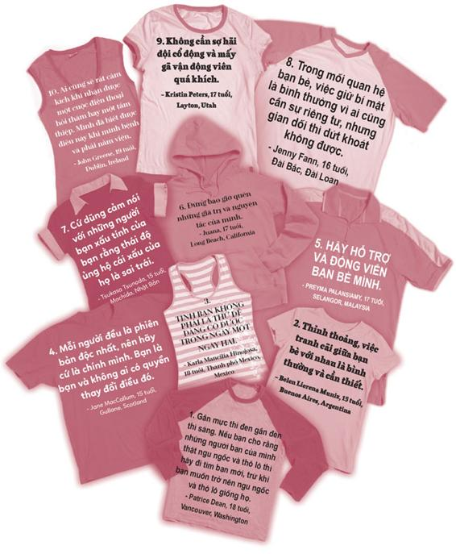
Đừng đi trước tôi, có thể tôi không theo kịp.
Đừng đi sau tôi, tôi nào biết dẫn đường.
Hãy đi bên tôi, mình làm bạn nhé.
- Albert Camus
Trong cả cuộc đời mình, tôi chỉ đấm người khác duy nhất một lần. Đó là lần tôi đấm đứa bạn thân.
Đó là năm tôi học lớp Hai. Tôi và cậu bạn tên Clar đang chơi đá banh hai chọi hai thì bắt đầu cãi nhau về luật chơi. Vì mất bình tĩnh, tôi đã đè Clar xuống và đấm vào mắt cậu ấy. Chính tôi cũng bị sốc với những gì mình vừa làm, thế nên tôi nhảy phắt dậy và chạy biến đi trong khi Clar thét lên như thể cậu ấy vừa trải qua một vụ giết người đẫm máu.
Mặc dù bị bầm mắt suốt hai tuần lễ, nhưng rồi Clar cũng tha thứ cho tôi và để tôi được làm bạn cậu ấy thêm lần nữa. Tôi hết sức biết ơn cậu ấy vì điều đó. Tình bạn của chúng tôi đã kéo dài đến tận hôm nay.
Còn điều gì tuyệt vời hơn khi có một người bạn thân? Khi ở bên bạn thân của mình, bạn có thể hoàn toàn là chính mình. Một bạn trẻ thông thái đã nói: “Chúa chăm nom chúng ta bằng cách gửi đến ta những người bạn”. Thế nhưng đôi khi bạn bè cũng trở mặt với bạn, nói xấu sau lưng bạn và làm cho bạn bực mình đến nỗi bạn muốn đấm cho họ một phát.
Giờ chúng ta hãy cùng nói về Bạn bè , quyết định mang tính bước ngoặt trên đường đời của chúng ta.
Bạn sẽ chọn ai làm bạn và bạn sẽ trở thành một người bạn như thế nào? Cũng giống như quyết định về chuyện học hành, quyết định về bạn bè không phải chỉ là một quyết định đơn lẻ mà là một chuỗi các quyết định bạn cần phải đưa ra suốt nhiều năm.
ĐÁNH GIÁ TỔNG THỂ TÌNH HÌNH BẠN BÈ
Trước khi chúng ta đi sâu vào chương này, hãy cùng làm bài đánh giá sau.
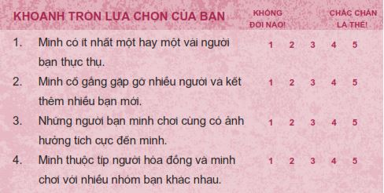
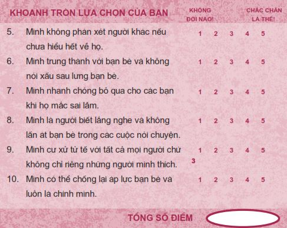
Hãy cộng tất cả điểm số lại để xem tình hình quan hệ bạn bè của bạn thế nào nhé.
Từ 40 - 50 điểm: Bạn đang đi trên đường đúng đắn. Hãy cứ tiếp tục phát huy nhé!
Từ 30 - 39 điểm: Bạn đang bước song song trên cả hai con đường. Hãy bước hẳn sang con đường đúng đắn nhé!
Từ 10 - 29 điểm: Bạn đang đi trên đường sai lầm. Hãy đặc biệt chú tâm vào chương này.
Đây là một chương rất thú vị. Phần đầu tiên, Vượt qua thăng trầm trong tình bạn , nói về những người bạn sáng nắng chiều mưa, những cô gái xấu tính, nạn bắt nạn, ganh đua và những lý do chúng ta không nên đặt trọng tâm cuộc sống của mình vào bạn bè. Trong phần Kết bạn và làm bạn , chúng ta sẽ khám phá những cách kết bạn và trở thành một người bạn tốt. Ở phần cuối cùng, Áp lực bạn bè , tôi sẽ nói về cách chống lại những áp lực tiêu cực từ bạn bè và xây dựng một hệ thống hỗ trợ tích cực cho riêng mình.
Vượt qua thăng trầm trong tình bạn
Sớm muộn rồi bạn bè cũng sẽ thể hiện BẢN CHẤT THẬT của họ, tức là thể hiện họ thuộc kiểu bạn nào. Madison đã kể với tôi về chuyện cô bạn thân ba năm của cô đã trở mặt với cô như thế nào để làm vừa lòng một tên con trai lớp trên.
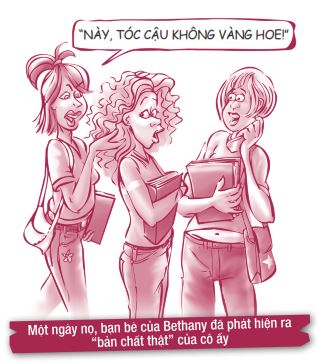
Năm mình học lớp Mười, cô bạn thân Shari của mình được một cầu thủ bóng bầu dục lớp Mười Hai tên Mitch theo đuổi. Anh chàng này gặp khá nhiều tai tiếng. Vì phong trào bóng bầu dục ở trường mình phát triển rất mạnh, Shari đã xem Mitch như tấm vé để trở nên nổi tiếng. Shari bắt đầu hành động như một đứa hay lên mặt đạo đức,cô ấy cũng bắt chước thái độ và cách nói năng thô lỗ của Mitch. Vì Shari và mình đã chơi thân với nhau nhiều năm, mình quyết định viết một lá thư riêng cho cô ấy để giãi bày với cô ấy rằng Mitch chỉ đang lợi dụng và sẽ bỏ rơi cô ấy một ngày nào đó.
Mình vô cùng khiếp sợ khi Shari không chỉ bác bỏ những gì mình viết mà cô ấy còn đưa lá thư của mình cho anh bạn trai. Mitch cực kỳ giận dữ vì mình đã viết ra những lời mang tính công kích cá nhân anh ta. Ngày hôm sau, Mitch và mấy người bạn to cao trong đội bóng của anh ta đứng quây quanh bàn ăn trưa của mình. Trước mặt tất cả mọi người trong phòng ăn ngày hôm ấy, Mitch đã tuôn ra một tràng đả kích, la hét và chửi thề. Anh ta đã gọi mình bằng những cái tên vô cùng kinh khủng.
Phần tồi tệ nhất của cơn ác mộng giữa ban ngày ấy chính là việc Shari đã đứng ngay phía sau anh ta và cười nhạo mình. Cô ấy từng là bạn thân nhất của mình suốt ba năm trời trong khi chỉ mới biết anh ta có một tháng. Đó chính là điều khiến mình tổn thương nhiều nhất.
Mình cố gắng hết sức để không bật khóc. Sau giờ ăn trưa, mình đã bỏ lớp học buổi chiều và chạy về nhà. Lúc đó, mình chỉ vừa mới vào trung học có vài tuần. Mình không biết phải đối mặt với mọi người như thế nào nữa.
Cha mẹ đã cố trấn an mình. Cha mình gọi điện cho thầy phó hiệu trưởng để nhờ thầy cảnh báo Mitch không được làm phiền mình. Việc đó lại như đổ thêm dầu vào lửa. Ngày hôm sau khi đến trường, mình phát hiện Mitch đã viết một từ tục tĩu lên tủ để đồ của mình. Mình xấu hổ đến nỗi phải bỏ lớp để lau sạch dòng chữ kinh khủng kia đi.
Ngay lúc đó, mình phải quyết định xem mình có để cho Mitch và Shari hủy hoại năm lớp Mười của mình hay không. Cha mẹ mình đã dạy mình rằng dù có việc gì xảy ra đi nữa, mình phải chịu trách nhiệm cho đời mình, thế nên mình quyết định sẽ không để Mitch và Shari tác động tiêu cực đến cảm nhận của mình về bản thân. Mình lấy lại quyền kiểm soát cuộc sống và hoàn toàn phớt lờ Mitch. Không bao lâu sau, anh ta nhanh chóng mất hứng với việc bắt nạt mình.
Đúng như mình đã nghi ngờ, sau khi tìm thấy một cô nàng dễ thương khác để lợi dụng, Mitch không còn hứng thú với Shari nữa và đã bỏ rơi cô ấy. Giờ đây, Shari bị xem là môt cô nàng “dễ dãi” và không một anh chàng tử tế nào rủ cô ấy đi chơi nữa. Shari cũng không có người bạn thân thiết nào vì cô ấy đã phớt lờ mọi người trong thời gian cặp kè với Mitch. Về sau, cô ấy có xin lỗi mình về những chuyện đã xảy ra. Mình tha thứ cho cô ấy và bọn mình lại cư xử thân thiện với nhau, nhưng niềm tin đã vĩnh viễn mất đi và tình bạn của bọn mình không bao giờ quay trở lại như xưa được nữa.
Bạn có thấy câu chuyện của Madison nghe có vẻ quen thuộc không? Hầu như những người tôi biết đều đã từng gặp phải trường hợp một người bạn “có vẻ” tốt bỗng “hiện nguyên hình” và bỏ rơi họ để đi kết thân với người nổi tiếng hơn. Ngày nay, chúng ta còn phải lo lắng thêm việc những người “bạn tốt” ấy đi nói xấu chúng ta trên mạng cho cả thế giới cùng biết. Nếu câu chuyện bên trên kể về sự thay lòng đổi dạ của Shari, câu chuyện dưới đây lại thể hiện lòng kiên định của Curtis Walker.
Suốt thời niên thiếu, mình lúc nào cũng gặp khó khăn trong việc kết bạn. Nếu mình không bị phớt lờ thì cũng bị trêu chọc. Mình luôn ước được trở nên nổi tiếng. Những bạn chịu nói chuyện với mình hầu hết là những bạn cũng bị cho ra rìa giống mình. Mọi người đều nghĩ bọn mình là một đám lập dị.
Năm học lớp Mười, mình chơi thể thao tiến bộ hơn trước rất nhiều và bắt đầu được mọi người chú ý. Lần đầu tiên mình được tham gia vào đội bóng của trường và dường như giấc mơ được chấp nhận của mình cuối cùng đã thành hiện thực.
Vào những ngày thi đấu, các cầu thủ thường mặc đồng phục và đi chung với nhau. Hôm diễn ra trận bóng đầu tiên của bọn mình, mình đã phải đưa ra một quyết định trọng đại vào giờ ăn trưa. Khi vừa mới chọn xong thức ăn, mình nhìn thấy các cầu thủ trong đội bóng đang ngồi ăn chung một bàn. Một số cầu thủ trong đội biết mình và đã vẫy tay mời mình đến bàn của họ.
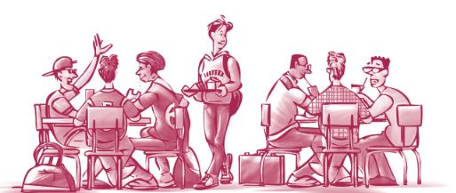
Ngay lúc định đi sang bàn của đội bóng, mình chợt nhìn thấy các bạn cũ của mình đang ngồi ở bàn của riêng họ. Khoảnh khắc ấy dường như kéo dài vô tận. Rồi mình chợt bừng tỉnh. Mình biết ai mới là những người bạn có ý nghĩa nhất với mình. Mình đã lựa chọn đi về phía chiếc bàn bé nhỏ kia để ngồi cùng những người bạn đã luôn ở bên cạnh mình.
Một số bạn trong đội bóng đá đã đối xử với mình khác đi sau ngày hôm đó. Mình biết mình đã bỏ lỡ nhiều hoạt động chung với các bạn nổi tiếng ở trường. Nhưng cuối cùng mình vẫn không hối hận, vì vào ngày hôm ấy, phẩm chất đạo đức của mình đã đạt đến một cột mốc mới.
Nếu xét đến bản chất thật của mỗi người, bạn có muốn có người bạn như Curtis không? Ngay ở khoảnh khắc bừng tỉnh đó, cậu ấy đã nhận ra rằng những người bạn cũ sẽ luôn ở bên cạnh cậu, ngay cả khi cậu không có chút năng khiếu thể thao nào. Tôi hy vọng bạn và tôi cũng sẽ có dũng khí giống như Curtis.
Một thách thức khá phổ biến trong tình bạn chính là việc phải đối phó với những người bạn hay thay lòng đổi dạ. Những thách thức khác trong tình bạn bao gồm: chiến thắng trò chơi tiếng tăm, chịu đựng những tật xấu của bạn bè, đương đầu với thói ngồi lê đôi mách và nạn bắt nạt, vượt qua sự so sánh và ganh đua.
Trong phần này, chúng ta sẽ bàn về từng thách thức một. Tôi cũng sẽ cung cấp cho bạn một vài mẹo để sống sót. Ngay sau đây là mẹo đầu tiên.
#1 - Hãy chọn những người bạn đứng đắn, những người thích bạn vì chính con người bạn, đừng chọn những kẻ hay thay lòng đổi dạ, chỉ thích bạn vì những gì bạn sở hữu.
TRỌNG TÂM CUỘC SỐNG CỦA BẠN LÀ GÌ?
Bạn có thể đối phó với những người bạn hay thay lòng đổi dạ bằng cách nào? Bí quyết ở đây chính là đừng lấy bạn bè làm trọng tâm cuộc sống của bạn. Trọng tâm cuộc sống phải là thứ quan trọng nhất đối với bạn, là thứ sẽ trở thành nhận thức của bạn, là cặp kính mà bạn dùng để nhìn thế giới.
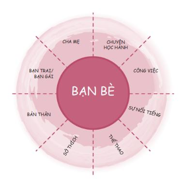
Có rất nhiều thứ có thể được các bạn trẻ xem là trọng tâm cuộc sống của mình, nhưng phổ biến nhất chính là bạn trai/bạn gái, thể thao, sự nổi tiếng và tất nhiên là cả bạn bè nữa. Việc lấy bạn bè làm trọng tâm cuộc sống của bạn nghe có vẻ là một ý hay, nhưng thật ra không phải vậy. Vì sao ư? Bởi vì bạn bè không hoàn hảo, không ổn định. Họ cũng là con người. Họ dịch chuyển. Họ đổi thay. Đôi khi họ còn trở mặt với bạn nữa. Nếu bạn đặt trọng tâm cuộc sống của mình vào bạn bè, bạn sẽ rất dễ bị mất thăng bằng. Đời sống tinh thần của bạn sẽ xoay quanh số lượng bạn bè bạn có hay cách bạn bè đối xử với bạn. Bạn sẽ chào thua trước áp lực bạn bè và để bạn bè chen vào tình cảm giữa bạn và cha mẹ mình.
Không ai thích có một người bạn có tính sở hữu cao và muốn cuộc đời bạn mình chỉ xoay quanh họ. Nhưng đó là điều sẽ diễn ra khi bạn đặt trọng tâm vào bạn bè. Nếu bạn muốn mất bạn bè mình, hãy đặt trọng tâm cuộc sống vào họ. Paul Jones, một bạn trẻ người Scotland đã nói về việc này như sau:
“Hãy cho bạn bè không gian riêng và đừng dựa dẫm vào họ; nếu họ là những người bạn tốt, họ sẽ tự nguyện ở lại cạnh bạn.”
Nếu ta không nên lấy bạn bè làm trọng tâm cuộc sống, vậy ta nên lấy thứ gì làm trọng tâm? Chính là các nguyên tắc. Đúng vậy đấy, hãy đặt trọng tâm cuộc sống vào những quy luật tự nhiên đã được kiểm chứng qua thời gian và không bao giờ thay đổi, chẳng hạn như sự trung thực, sự tôn trọng và tinh thần trách nhiệm. Không giống như bạn bè, các nguyên tắc không bao giờ sai lệch, không nói xấu hay trở mặt với bạn. Các nguyên tắc bất di bất dịch. Điều tuyệt vời nhất chính là: Khi bạn lấy các nguyên tắc làm trọng tâm cuộc sống, mọi thứ còn lại, bao gồm cả các mối quan hệ bạn bè, sẽ tự vào đúng chỗ của mình. Lạ lùng thay, khi bạn đặt các nguyên tắc lên trên bạn bè, bạn lại kết được nhiều bạn hơn và bản thân cũng trở thành một người bạn tốt hơn. Đó là bởi vì cảm giác an toàn của bạn không còn lệ thuộc vào những yếu tố bên ngoài nữa mà đến từ bên trong chính bạn. Bạn sẽ trở nên kiên định, vững vàng và mọi người đều thích làm bạn với những người như thế.
#2 - Hãy cố gắng kết bạn thật nhiều, nhưng đừng bao giờ đặt trọng tâm cuộc sống của mình vào bạn bè.
SỰ NỔI TIẾNG LÀ TẤT CẢ!
Khi nghe thấy từ nổi tiếng , bạn nghĩ ngay đến điều gì? Bạn khao khát được nổi tiếng hay chỉ việc nghĩ đến từ này thôi cũng đủ khiến bạn buồn nôn? Giống như hầu hết mọi thứ trên đời, sự nổi tiếng cũng có mặt tích cực và mặt tiêu cực.
Xét về mặt tiêu cực, chúng ta thường liên hệ từ “nổi tiếng” với những con người ngạo mạn, kiêu căng, xấc xược, luôn nghĩ mình giỏi hơn người khác. Khi ta nhắc đến từ này, trong đầu ta thường hiện lên hình ảnh những bạn trẻ đẹp trai, xinh gái luôn ăn mặc hợp thời và nói năng sành điệu. Họ cho rằng ai cũng ngưỡng mộ họ, dù thật ra họ bị nhiều người ghét. Thế nên trong thực tế, họ chỉ thật sự nổi tiếng trong cộng đồng riêng của họ mà thôi. Sự nổi tiếng đã trở thành trọng tâm cuộc sống của những bạn trẻ này. Ngày nay, chúng ta dễ bị ám ảnh về sự nổi tiếng trên mạng của mình. Chúng ta dành nhiều thời gian lo lắng không biết mình nhận được bao nhiêu lượt “like” thay vì quan tâm đến những người thật sự thích chúng ta ngoài đời thật.
Nhưng sự nổi tiếng cũng có mặt tích cực. Có rất nhiều người được yêu thích và tôn trọng bởi vì họ thật sự tử tế. Những người bạn này thân thiện với tất cả mọi người. Họ không cao ngạo. Họ thường làm việc chăm chỉ để trở nên xuất sắc ở một lĩnh vực nào đó. Anh bạn Duane của tôi chính là một người như thế. Anh ấy được tất cả các bạn nữ trong trường bầu chọn là “nam sinh được yêu thích nhất”. Anh ấy là vận động viên thể thao cừ khôi, nhưng anh cũng hết sức tử tế với mọi người. Anh ấy nổi tiếng theo cách hoàn toàn tích cực. Tôi xin nói rõ: Sự nổi tiếng không phải là điều gì xấu xa. Sự nổi tiếng chỉ trở nên xấu xa khi người ta bắt đầu nghĩ mình tốt đẹp hơn người khác.
Vậy nếu bạn là người tốt bụng nhưng không nổi tiếng thì sao? Đừng lo lắng vì điều đó. Đừng đặt trọng tâm cuộc sống của mình vào sự nổi tiếng hay cố gắng trở nên nổi tiếng chỉ vì bạn nghĩ nổi tiếng sẽ rất vui. Mọi việc không diễn ra theo hướng này. Đầu tiên, hãy trở thành phiên bản tốt nhất của bản thân. Nếu bạn tập trung vào bản thân mình, những điều tốt đẹp sẽ đến. Sau đó, nếu bạn nổi tiếng thì tốt, nếu không thì cũng vẫn ổn. Suy cho cùng, sự nổi tiếng chỉ là nhân tố thứ yếu chứ không phải là nhân tố chính yếu tạo nên sự vĩ đại. Sự nổi tiếng dựa trên những yếu tố bên ngoài như: danh tiếng, tiền bạc, sắc đẹp hay cơ bắp. Mọi người thường cho rằng đây là những thứ giúp một người trở nên vĩ đại. Thật ra việc có được những yếu tố này không có gì sai trái cả. Chỉ là cuối cùng thì những điều này không thật sự quan trọng hay vững bền.
Ngược lại, sự vĩ đại đích thực không đến từ những thứ bạn nhìn thấy bên ngoài, mà đến từ những gì nằm bên trong. Sự vĩ đại đích thực chính là nhân cách của bạn - con người thật của bạn. Đây là thứ trường tồn với thời gian.
Tuy nhiên, hiện nay có vẻ khái niệm về sự nổi tiếng đang dần thay đổi. Ngày trước, chỉ những vận động viên thể thao hoặc thành viên đội cổ vũ mới được xem là “ngầu”, nhưng giờ đây mọi thứ đã thay đổi. Nhờ sự bùng nổ của các hoạt động ngoại khóa, giờ đây sự nổi tiếng không chỉ dành cho một nhóm nhỏ học sinh nữa. Có rất nhiều cách để bạn có thể trở thành nhân vật “ngầu” trong trường.
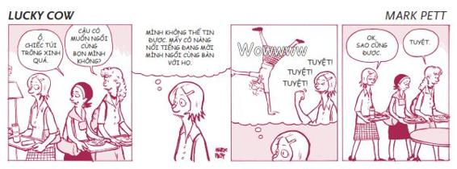
#3 - Đừng cố gắng trở nên nổi tiếng. Bạn chỉ cần là chính mình và sống tử tế với mọi người rồi những điều tốt đẹp sẽ đến.
NHỮNG CON ONG CHÚA, NHỮNG KẺ XUN XOE VÀ NHỮNG CÔ GÁI GAMMA
Trong một bài báo trên tạp chí Newsweek , Susannah Meadow đã phân tích về quyển sách Queen Bees & Wannabes (tạm dịch: Những con Ong chúa và những kẻ Xun xoe ). Quyển sách này được viết bởi Rosalind Wiseman, nói về chủ đề sự nổi tiếng và sự hòa nhập. Wiseman đã viết về ba nhóm nữ sinh mà cô nghiên cứu. Cô gọi họ là nhóm Alpha, nhóm Beta và nhóm Gamma. (Xin chú thích thêm: Alpha, Beta và Gamma đơn giản là ba chữ cái đầu tiên trong bảng chữ cái Hy Lạp.)
Nhóm Alpha, còn được gọi là những con Ong chúa, là những người xem sự nổi tiếng là tất cả. Những con Ong chúa hết lòng bảo vệ đồng bọn của mình và sẽ khai trừ ra khỏi nhóm bất cứ kẻ nào đe dọa sự thống trị của họ. Nhóm Beta là những kẻ Xun xoe. Họ sẽ làm mọi việc chỉ để được những con Ong chúa chấp nhận.
Những con Ong chúa và những kẻ Xun xoe lún quá sâu vào cái bẫy của sự nổi tiếng và bị mắc kẹt trong đó, họ không nhận ra còn có một nhóm khác chiếm ưu thế hơn họ. Wiseman gọi nhóm thứ ba này là những cô gái Gamma. Những bạn trẻ này có thể không phải là những người nổi tiếng nhất, nhưng chắc chắn họ không phải những kẻ lu mờ. Ngược lại, họ là những cô gái tràn đầy tự tin. Họ không xấu tính. Họ sống hòa thuận với cha mẹ mình. Họ rất thông minh. Và họ cho rằng sự nổi tiếng đã được đề cao quá mức.
Bài báo đã làm nổi bật hình ảnh của những cô gái Gamma ở trường Trung học Valhalla, California. Những cô gái này “không mong mỏi được mời tiệc tùng; họ quá bận rộn với việc viết bài cho tờ báo của trường, chơi lướt ván hay đi cưỡi ngựa”. Reyna Cooke, một cô gái Gamma, đã nói: “Để nhập hội với người nổi tiếng, tôi phải mặc một số kiểu quần áo nhất định, phải trở nên yểu điệu và tham dự tiệc tùng, hút thuốc, uống bia. Những việc này giống như đang làm giảm giá trị của bản thân đi vậy”. Thay vì cố trở nên nổi tiếng, các cô gái Gamma tham gia vào nhiều hoạt động khác nhau ở trường học, nhà thờ và ngoài xã hội. Họ cũng chơi nhiều môn thể thao mang tính cạnh tranh.
Trước đây, các cô gái Gamma thường bị chỉ trích và chế nhạo. Tuy nhiên, nhờ vậy mà các bạn ấy đã xây dựng được tính độc lập và lòng tự tin. Họ tin tưởng mạnh mẽ vào các giá trị của bản thân, họ thích khoảng thời gian được ở bên gia đình và kiên quyết chờ đến khi kết hôn mới quan hệ tình dục. Các bạn trong nhóm Alpha và Beta hãy coi chừng nhé! Nhóm Gamma sẽ giành chiến thắng đấy. (Chân thành xin lỗi các bạn nam vì mẹo này dường như dành riêng cho các bạn nữ.)
#4 - Nếu bạn đã quá mệt mỏi khi phải làm Ong chúa và kẻ Xun xoe, hãy trở thành một cô gái Gamma.
TẬT XẤU, SAI SÓT, NHƯỢC ĐIỂM
Cả bạn và những người bạn của bạn đều đang trong quá trình tìm hiểu xem mình là ai và mục đích của cuộc sống này là gì. Tất cả chúng ta đều có lúc thay đổi, trải qua những thăng trầm và mắc phải những sai lầm riêng. Thỉnh thoảng, bạn bè thậm chí còn nói xấu sau lưng nhau mà hoàn toàn không có ác ý gì hay đôi lúc chúng ta lại có chút cảm giác ghen tị với các bạn. Mặc dù ta không nên chơi với những người bạn xấu tính hay lúc nào cũng hành xử như kẻ ngớ ngẩn, ta nên bao dung đối với các điểm yếu trong đời sống hằng ngày của bạn bè mình và đừng phản ứng thái quá trước những sai sót của họ.
Hãy bỏ qua những tật xấu, sai sót, nhược điểm và mâu thuẫn của các bạn mình, bởi bạn cũng mong muốn họ làm vậy với bạn.
Kevin đã chia sẻ với tôi câu chuyện sau.
Một ngày nọ, trước buổi tập bóng chày, mình đã để chai nước của mình trên băng ghế và đi vào phòng tắm. Khi quay trở lại, mình cầm lấy chai nước và tu một hơi dài. Bỗng nhiên mọi người rú lên cười như điên. Mình phát hiện ra có kẻ đã nhổ nước bọt vào chai nước của mình. Nhưng thay vì nổi trận lôi đình trước mặt mọi người, mình chọn nhấn nút “tạm dừng” trong đầu. Mình vừa đọc xong quyển 7 Thói quen và mình đã nhẩm lại trong đầu hai quyết định: quyết định làm chủ tình huống và quyết định phản ứng lại tình huống một cách bị động.
Một lát sau, mình bước đến trước mặt cậu bạn đã nhổ nước bọt vào chai nước của mình và hỏi: “Sao cậu lại làm vậy?”. Bọn mình đã nói chuyện thẳng thắn với nhau, cậu ấy xin lỗi mình và mình đã bỏ qua vì dù sao cậu ấy cũng là bạn mình. Tối đó về nhà, mình cảm thấy rất vui và nhẹ nhõm vì đã quyết định nói chuyện thẳng thắn với cậu bạn và duy trì được tình bạn giữa hai đứa. Mình nhận ra những xích mích nhỏ trong tình bạn là rất bình thường và điều tốt nhất chúng ta nên làm không phải là phản ứng thái quá, mà là tha thứ và quên đi.
Kevin đã hành động theo câu tục ngữ:
“Người khôn ăn nói nửa chừng để cho kẻ dại nửa mừng nửa lo.”
Có những lúc chúng ta nên tha thứ cho bạn bè khi họ làm hỏng việc, nhưng cũng có những lúc chúng ta cần vạch rõ giới hạn. Cô bạn Kristine của chúng ta đã nhận ra điều này.
Cô bạn Cindi đã đùa giỡn đùa ác ý với mình vài lần. Một lần nọ, cô ấy và một cô bạn tên Monique đã giấu toàn bộ đồ bơi, đồ lót và quần short của mình sau giờ học bơi, và mình đã phải mặc mỗi một chiếc áo thun dài để đi bộ gần một dặm để về nhà. Một lần khác, cô ấy đưa mình đến một bữa tiệc bia được tổ chức cách nhà mình rất xa, dù biết rõ mình không uống được bia. Khi bữa tiệc kết thúc, cô ấy lại không chịu đưa mình về nhà. Tất nhiên, sau đó mình đã bị cấm túc. Sau mỗi lần như vậy, cô ấy đều gọi điện xin lỗi mình và hứa sẽ không bao giờ làm thế nữa. Nhưng rồi cô ấy vẫn cứ chứng nào tật nấy.
Có vẻ như Kristine không nên duy trì tình bạn này nữa. Nếu bạn cũng có một người bạn cứ liên tục lợi dụng hoặc khiến bạn thất vọng hết lần này đến lần khác như Kristine, bạn cũng nên chấm dứt tình bạn ấy. Nhưng có sự khác biệt rất lớn giữa việc vạch ra giới hạn rõ ràng và việc phản ứng thái quá trước những việc nhỏ. Tựa đề quyển sách của Richard Carlson đã minh họa rất hay cho điều này: “Đừng bận tâm chuyện không đáng” ( Don’t sweat the small stuff ) 3 .
3 First News đã xuất bản với tựa Vượt Lên Những Chuyện Nhỏ.
# 5 - Hãy bỏ qua những lỗi nhỏ của bạn bè mình, giống như khi bạn muốn bạn bè bỏ qua những sai sót của bạn vậy.
NHỮNG CÔ GÁI XẤU TÍNH, CHUYỆN NGỒI LÊ ĐÔI MÁCH VÀ NẠN BẮT NẠT
Con trai bắt nạt bạn bè bằng cách đe dọa hoặc đẩy bạn mình vào tủ để đồ. Còn con gái bắt nạt bạn bè bằng những cách tinh vi hơn, như đâm sau lưng, nói xấu, tẩy chay, đặt biệt danh xấu, đặt điều hay liên tục nghỉ chơi rồi chơi lại, tất cả đều được cẩn thận sắp đặt nhằm làm tổn thương đối tượng bị nhắm đến. Đó là lý do tại sao chúng ta có khái niệm những cô gái xấu tính.
Tật ngồi lê đôi mách đặc biệt đáng kinh tởm. Mẹ của Lacey nghĩ cô bé nên thử phương pháp học tại nhà nên bà đã để Lacey tạm ngừng việc học tại trường cấp hai. Không bao lâu sau, một người bạn cùng lớp của Lacey bắt đầu lan truyền tin đồn Lacey bị đuổi học vì đã phạm một lỗi hết sức kinh khủng. Tin đồn lan đi với tốc độ chóng mặt. Khi việc này đến tai Lacey, cô bé đã cảm thấy vô cùng suy sụp. Gậy và đá chỉ khiến bạn gãy xương còn lời nói có thể xé toạc tâm can bạn. Chính vì thế, chúng ta phải hết sức cẩn thận với những chuyện có thể gây ảnh hưởng đến thanh danh của người khác.
Nếu đang bị kẻ khác nói xấu sau lưng, bạn có thể thử một vài cách sau.
Đầu tiên, hãy xem xét việc đối mặt với những kẻ nói xấu. Thay vì nói xấu lại kẻ đã nói xấu bạn, hãy trực tiếp đến gặp họ và nói: “Tớ nghe được rằng cậu đã nói xấu sau lưng tớ. Tớ sẽ rất cảm kích nếu cậu dừng việc này lại. Cậu biết rõ tớ không phải kiểu người xấu như thế mà”. Ta phải vô cùng can đảm mới có thể đối mặt với nạn nói xấu sau lưng, nhưng đây chính là phương pháp hiệu quả có thể khiến những kẻ nói xấu chịu im miệng, đặc biệt là khi bạn có thể kiểm soát tốt cảm xúc của mình lúc nói chuyện với họ. Tuy nhiên, bạn cũng cần cẩn thận. Một số kẻ xấu tính đến nỗi việc nói chuyện thẳng thắn với họ có thể khiến vấn đề tồi tệ hơn.
Tiếp theo, hãy sống trên dư luận. Đôi khi việc tốt nhất bạn có thể làm là hãy cứ bơ đi mà sống.
Kaithlyn đã chia sẻ cách bạn ấy đối phó với nạn nói xấu sau lưng như sau:
“Mình phụ trách chơi trống trong ban nhạc diễu hành của trường khi còn là học sinh đầu cấp. Nhiều học sinh lớp trên hết sức cay cú về việc này nên họ nói xấu sau lưng mình rất nhiều, nhưng mình chẳng buồn để ý. Mặc dù họ vẫn nói sau lưng mình, ít ra mình cũng đã tử tế với họ.”
Nhiều bạn có thể đọc những dòng này và nghĩ: “Chờ đã, hình như ông đang muốn ám chỉ tôi thì phải. Tôi chính là kẻ xấu tính, kẻ chuyên đi bắt nạt đây”. Nếu quả thật như vậy, xin bạn hãy bắt đầu sống tử tế ngay từ bây giờ. Có quá nhiều người thích làm tổn thương người khác. Một người mẹ kể với tôi rằng hồi còn học trung học, con gái bà đã bị ức hiếp nghiêm trọng đến nỗi cô vẫn phải đối mặt với những nỗi đau tinh thần cho đến tận hôm nay, dù cô đã tốt nghiệp trung học được mười năm! George Eliot từng viết: “Chúng ta sống để làm gì nếu không phải để giúp cuộc sống của nhau bớt khó khăn hơn?”.
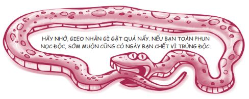
Nạn bắt nạt đã thay đổi rất nhiều và đang có khuynh hướng chuyển từ thế giới thực sang thế giới ảo. Chúng ta gọi đó là bạo lực mạng, tức hình thức bắt nạt có sự hỗ trợ của công nghệ (cyberbullying). Vậy bạo lực mạng chính xác là gì? Bạo lực mạng có thể tồn tại dưới nhiều hình thức khác nhau: lan truyền tin đồn thất thiệt trên các phương tiện truyền thông xã hội, gửi tin nhắn với nội dung xấu, đăng tải những hình ảnh khiến nạn nhân xấu hổ, giả mạo tài khoản mạng xã hội, v.v. Hình thức bắt nạt này có thể gây ra những hậu quả khôn lường.
Chúng ta hãy cùng nghe Abby kể lại câu chuyện liên quan đến vấn đề này.
Suốt thời trung học, mình lúc nào cũng bị bạn bè chọc ghẹo. Họ nói mình thật xấu xí và không được ai thích. Thậm chí có những người còn tạo tài khoản ảo trên Facebook chỉ để nhắn tin cho mình, nói rằng mình chính là con vịt xấu xí nhất họ từng gặp. Cha mẹ mình đã nói chuyện với ban giám hiệu và trực tiếp yêu cầu những kẻ bắt nạt kia xin lỗi mình, thế nhưng đằng nào thì mình cũng đã bị tổn thương rồi. Những lời họ nói khiến mình cảm thấy bản thân thật ngu ngốc và xấu xí. Mình thậm chí còn nghĩ bản thân đúng là trông giống con vịt thật! Đến tận hôm nay, lòng tự trọng của mình vẫn còn bị tổn thương.
Thật không thể tin được là con người lại có thể xấu tính với nhau đến vậy, nhưng sự thật là đúng như thế. Khi công nghệ thay đổi, phương thức bắt nạt cũng thay đổi theo. Nếu bạn đang phải chịu đựng nạn quấy rối trên mạng, tuyệt đối đừng im lặng. Việc trốn tránh có thể khiến vấn đề trở nên tồi tệ hơn. Hãy nói chuyện với cha mẹ hay thầy cô về những gì bạn đang phải chịu đựng. Và xin bạn đừng bao giờ tham gia vào việc bắt nạt người khác dưới bất cứ hình thức nào. Bạn cũng có thể truy cập vào trang web www.stopbullying.gov để có thêm lời khuyên về cách xử lý và ngăn chặn nạn bắt nạt.
#6 - Nếu bạn đang bị người khác nói xấu sau lưng hay bắt nạt, hãy đối mặt với kẻ bắt nạt ấy hoặc tìm cách bơ đi mà sống.
NHỮNG CON CUA VÀ SỰ GANH ĐUA
Cua là một sinh vật rất buồn cười. Nếu bạn bỏ vài con cua vào một cái xô, không con cua nào bò ra ngoài được cả, bởi vì ngay khi một con cua vừa ngoi lên trên, những con khác sẽ ngay lập tức kéo nó xuống. Bạn có bao giờ có cảm giác như thế chưa? Ngay khi ai đó vượt lên dẫn đầu, những người khác sẽ bắt đầu ghen tị và tìm cách kéo người dẫn đầu xuống?
Việc so sánh bản thân mình với người khác (về quần áo, ngoại hình, năng lực, v.v) là hoàn toàn tự nhiên. Việc bạn muốn cạnh tranh, muốn chiến thắng và muốn vươn lên dẫn đầu cũng là tự nhiên. Việc bạn cảm thấy ghen tị khi bạn bè thành công cũng là tự nhiên nốt. Nhưng tự nhiên không phải lúc nào cũng tốt. Thật ra, cạnh tranh với bạn bè của mình là việc hết sức nguy hiểm. Xin đừng hiểu sai ý tôi nhé. Trong một số lĩnh vực như thể thao hay kinh doanh, cạnh tranh là yếu tố cần được khuyến khích, nhưng trong tình bạn thì không.
Cách để thoát khỏi cái vòng lẩn quẩn của sự so sánh và ganh đua chính là thực hành Thói quen 4: Tư duy cùng thắng. Lối tư duy này có thể tóm gọn như sau: “Cuộc sống không phải một cuộc tranh tài. Tôi muốn giành chiến thắng và tôi cũng muốn bạn giành được chiến thắng. Cuộc sống luôn có đủ phần thưởng cho những người xứng đáng. Thành công của tôi không đồng nghĩa với thất bại của bạn”.
Lora đã kể với tôi về điều kỳ diệu xảy ra với bạn ấy khi bạn ấy buông bỏ được ham muốn ganh đua.
Bác Sean thân mến,
Việc phải từ bỏ những bỏ thói quen xấu đã đi cùng mình suốt mười sáu năm ròng thật khó khăn. Một trong những tiến bộ nổi bật của cháu chính là cháu đã thôi không còn cố gắng cạnh tranh với một bạn gái ở trường. Bạn ấy rất kiêu ngạo và vì bạn ấy có nhiều sở thích giống cháu nên bọn cháu đụng độ khá thường xuyên. Ngày trước, cháu đã để sự ganh ghét phá hủy niềm vui của bản thân khi tham gia một số hoạt động như đóng kịch tại trường và tham gia các cuộc thi hùng biện.
Giờ đây, cháu đã tiến bộ hơn trước nhiều rồi ạ. Cháu đã tha thứ cho bạn ấy và vui vẻ sống tiếp. Hôm nay cháu đã viết vào nhật ký một lời nhắc nhở bản thân: “Cuộc sống KHÔNG PHẢI là một cuộc tranh tài”. Bác biết không, cháu bắt đầu cảm thấy VUI VẺ HƠN RẤT NHIỀU! Cháu thấy như mình vừa trút được gánh nặng vậy.
Tư duy cùng thắng không có nghĩa là bạn chịu thua và để cho bạn bè đè đầu cưỡi cổ mình. Đó gọi là tư duy Thua - Thắng và cách nghĩ này cũng không phải là lựa chọn đúng đắn. Dưới đây là bình luận của cô bạn mười sáu tuổi Sonya - một học sinh gương mẫu - về vấn đề này.
Mình luôn là người tạo hòa khí trong gia đình hay trong một nhóm bạn. Mình luôn cho rằng nhún nhường là cách giải quyết mọi chuyện dễ dàng nhất. Mình thường giữ im lặng vì mình không muốn làm tổn thương cảm xúc của bất kỳ ai. Mình không bao giờ khơi mào bất cứ một cuộc tranh cãi nào và cuối cùng mình thấy như mình đang ngược đãi bản thân. Mình giống như tấm thảm chùi chân vậy. Mọi người đều lợi dụng mình. Có lẽ mọi người đều cảm thấy vui vẻ, nhưng bản thân mình thì không, và nếu cứ thế mãi mình nghĩ mình sẽ nổ tung mất.
#7 - Trong quan hệ bạn bè, hãy thôi ganh đua, so sánh mà hãy bắt đầu tư duy cùng thắng.
SAO CẬU KHÔNG CHƠI VỚI BỌN TỚ NỮA?
Hồi tiểu học, tôi có một cậu bạn thân tên Paul. Chúng tôi từng làm mọi việc cùng nhau. Chúng tôi chơi chung đội tennis, đội bóng rổ, đội bóng chày, đội bơi và đội bóng bầu dục. Chúng tôi ngủ lại ở nhà nhau. Chúng tôi là những người bạn thân nhất trong những người bạn thân.
Khi vào trung học, hai chúng tôi bắt đầu có những lối đi riêng. Paul không bỏ rơi tôi và tôi cũng không bỏ rơi cậu ấy, chúng tôi chỉ phát triển những sở thích khác nhau mà thôi. Paul mê bóng rổ, còn tôi mê bóng bầu dục. Chúng tôi bắt đầu đi chơi với những người bạn khác. Chúng tôi vẫn duy trì một mối quan hệ gần gũi, chỉ là chúng tôi không còn đi chơi chung với nhau nhiều như trước.
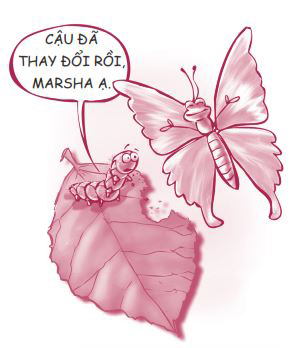
Hãy cởi mở chấp nhận sự thật rằng bạn và các bạn của mình sẽ thay đổi. Điều đó hoàn toàn bình thường. Đứa bạn thân nhất của bạn năm nay có thể trở nên xa lạ vào năm sau, đặc biệt là vào thời điểm các bạn chuyển cấp, như từ cấp hai lên cấp ba. Có sự khác biệt rất lớn giữa việc từ bỏ bạn bè và việc phát triển các mối quan hệ bạn bè mới do sở thích thay đổi. Thế nên, bạn không cần phải lo lắng khi bạn bỗng dưng xa rời những người bạn cũ vì các sở thích mới đã kéo bạn đi theo những hướng đi khác.
#8 - Hãy nhớ rằng bạn và bạn bè của bạn có thể thay đổi và theo đuổi những sở thích khác nhau, điều đó hoàn toàn bình thường.
Có vô số thăng trầm trong tình bạn và chúng ta chỉ mới vừa bàn đến một số ít trong đó thôi. Nhưng bất luận tình bạn có nhiều thách thức đến đâu, tất cả chúng ta đều cần có bạn. Bạn bè chính là những bông hoa nhiều màu sắc giúp khu vườn tâm hồn của ta thêm sinh động. Ai đó đã nói với tôi: “Bạn bè giống những cái cột trên mái vòm. Có lúc họ chống đỡ cho bạn, có lúc họ tựa vào bạn. Và cũng có những lúc bạn chỉ cần biết bạn bè vẫn đang ở bên cạnh mình cũng đã quá đủ rồi”.
Kết bạn và làm bạn
Tôi đã hỏi vài bạn trẻ họ nghĩ thế nào là một người bạn đích thực, và dưới đây là câu trả lời của họ.
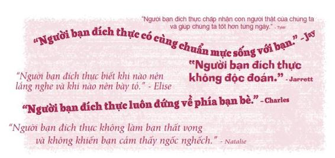
Một số bạn trẻ cảm thấy việc tìm và kết giao với bạn tốt khá dễ dàng. Nhưng với nhiều bạn trẻ khác thì việc đó thật khó khăn. Jose kể với tôi: “Cháu là một kẻ cô độc ở trường. Cháu chỉ muốn có ai đó để trò chuyện, để kể nhau nghe những vui buồn trong cuộc sống thường ngày. Cháu đoán vấn đề nằm ở chỗ cháu thiếu tự tin. Cháu luôn cảm thấy mình kém cỏi hơn người khác. Cháu không thể thay đổi suy nghĩ của mình được”.
Hãy tin tôi, ai trong chúng ta cũng muốn tìm được vị trí của mình, muốn được chấp nhận và được hòa nhập với mọi người.
Nếu bạn đang lo lắng về cách kết bạn, cách duy trì các mối quan hệ bạn bè tốt đẹp và cách để chính mình trở thành một người bạn tốt, hãy đọc tiếp nhé. Tôi sẽ giới thiệu với bạn bảy việc thiết yếu để làm được điều đó.
ĐỪNG VỘI PHÁN XÉT
Tôi tin rằng chúng ta thường đánh mất bạn bè của mình vì chúng ta phán xét quá vội vàng.
Tại trường Trung học Hilliard Darby, bang Ohio, cô Susan Warline đã khởi xướng Ngày Sống Chan Hòa (Mix It Up Day) nhằm trưởng dưỡng lòng bao dung và giúp các học sinh mở rộng vòng bạn bè của mình. Trong giờ ăn trưa của Ngày Sống Chan Hòa, cô khuyến khích các học sinh của mình trò chuyện với những người mà trước nay họ chưa từng nói chuyện cùng.
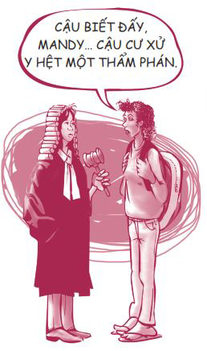
Có một học sinh đã di cư từ Somalia đến Hoa Kỳ nhằm thoát khỏi cuộc nội chiến và cuộc sống nghèo đói ở quê hương mình. Vào giờ ăn trưa, cô bé đã khẳng khái hỏi một nam sinh nổi tiếng nhờ chơi thể thao giỏi trong trường: “Sao cậu lại gọi bọn tớ là ‘mấy đứa Somalia hôi hám’?”.
Cậu ta ngay lập tức đáp trả: “À, vậy cậu ở đây làm gì? Sao cậu không về nước cậu mà ở?”.
Cô bé im lặng vài giây. Rồi bằng giọng nhỏ nhẹ, cô bé kể cho cậu bạn kia biết rằng cô đã chứng kiến cảnh cả gia đình bị bắn ngay trước mặt mình, chỉ có cô, một người anh trai và vài người anh em họ trốn thoát được. Cô nói cho cậu ta biết đất nước Somalia đang bị kiểm soát bởi chính quyền quân phiệt và cô thấy vô cùng biết ơn khi cô và các thành viên may mắn sống sót trong gia đình giờ được sống ở một quốc gia tự do.
Bạn có thể tưởng tượng cảnh cậu bạn kia đực mặt ra như thế nào rồi đấy. Đó quả là một thay đổi lớn trong nhận thức! Trước khi họ nói chuyện với nhau, tất cả những gì cậu ta biết về cô bạn chỉ là vẻ ngoài khác biệt của cô và cậu ta bực tức với cô ấy. Giờ thì cậu đã thấy được bức tranh toàn cảnh, cậu đã nhìn mọi việc khác đi. Ngạn ngữ có câu: “Hãy luôn nói những lời mềm mỏng và ngọt ngào, phòng khi bạn phải tự nuốt ngược những gì mình đã nói vào trong!”.
Cô Susan Warline cũng đã phát hiện ra rằng trong 582 bạn trẻ tham gia khảo sát, có đến 88% các bạn trẻ tin rằng các em bị phán xét chỉ vì vẻ bề ngoài của mình.
Ngoài ra, có nhiều bạn cảm thấy mình bị phán xét bởi hình thể và ngôn ngữ mình nói. Bạn sẽ cảm thấy thế nào nếu bản thân bị phán xét chỉ dựa trên những yếu tố bên ngoài đó và không ai chịu tìm hiểu con người thật của bạn? Tôi nhận thấy những vấn nạn ở trường học vẫn không thay đổi mấy kể từ thời tôi còn ngồi trên ghế nhà trường. Những bình luận thiếu tôn trọng vẫn xuất hiện ở khắp mọi nơi.
Stephanie, học sinh trường Trung học Warren Central, đã chia sẻ: “Chúng ta phán xét người khác như một thói quen. Mọi người, bao gồm cả chính mình, hay tự động phán xét bất cứ người nào đi ngang qua chúng ta ở trung tâm thương mại, ở trường hay mọi nơi khác mà không hề nhận ra điều chúng ta vừa làm”.
Trường hợp của Anna khi cô ấy chuyển trường là một ví dụ điển hình cho vấn đề này. “Lúc đầu mình không quen biết ai cả. Sau khi mình kết thân được vài người bạn, họ nói với mình trước đây họ có ấn tượng rằng mình là một kẻ ngạo mạn. Mình không thể tin được. Sự thật là trước đây mình thường thu mình lại bởi vì quá ngượng ngùng”.
Hãy bước ra khỏi vùng an toàn của bạn để làm quen thêm bạn mới. Bất kỳ ai cũng có nhiều điều thú vị chờ được chia sẻ với chúng ta. Người xa lạ thật ra chỉ là những người bạn tương lai của chúng ta mà thôi.
TỰ MÌNH NỖ LỰC
Tôi có biết một bạn gái luôn phàn nàn rằng bạn bè của cô ấy không chịu nỗ lực giúp cô hòa nhập. Tuy nhiên, khi quan sát cách cô ấy tương tác với bạn bè, tôi nhận ra chính cô ấy cũng không hề nỗ lực giúp họ hòa nhập với cô.
Nếu bạn muốn kết bạn, trước tiên hãy tự mình chủ động và nỗ lực. Đừng ngồi một chỗ chờ bạn bè đến với mình. Bạn phải chủ động kết bạn và kiên trì nỗ lực nếu lúc đầu bạn không thành công.
Hãy xem câu chuyện của Angela nghe có quen không nhé.
Mình biết rất rõ cảm giác không có một nhóm bạn chơi cùng là như thế nào. Năm đầu trung học của mình thật cô đơn. Mình không tự tin, cũng không được hoạt bát lắm và mình vô cùng khát khao có bạn.
Có một câu lạc bộ thanh thiếu niên khá lớn ở nhà thờ gần nhà mình. Vào lần đầu tham dự một hoạt động của câu lạc bộ, mình đã đi đến nhà thờ một mình rồi dành toàn bộ thời gian và sức lực để tỏ vẻ như mình đang trò chuyện với một ai đó. Mình nói với mẹ mình không muốn trở lại đó nữa. Nhưng mẹ hỏi: “Nhưng nếu không đến đó thì làm sao con có thể kết bạn được?”.
Mình khao khát được có bạn đến nỗi mình đã trở lại câu lạc bộ một mình, hết tuần này đến tuần khác, dù vẫn không thành công.
Một buổi tối nọ, bọn mình hát một bài hát của Michael Smith có tựa đề “Bạn bè” (Friends). Mình nghiền ngẫm lời bài hát và nước mắt cứ chực trào ra. Mình cảm thấy hết sức cô đơn và tủi thân. Tại sao không cô gái nào muốn trở thành bạn của mình vậy?
Có nhiều lúc, thú vui vào thời gian rảnh của bạn chỉ bao gồm việc trông con giúp chị gái vào tối thứ Sáu và xem kênh Disney Channel! Nhưng mọi việc sẽ không kéo dài mãi như thế. Hãy cứ tiếp tục cố gắng và đừng tự cô lập bản thân bằng cách tự thương hại mình. Tôi thích những lời truyền cảm hứng này của diễn giả Og Mandino:
"Hãy luôn tin rằng hoàn cảnh sẽ đổi thay. Dù lòng bạn nặng trĩu, toàn thân bạn bầm dập, bạn không còn đồng xu dính túi và không có ai bên cạnh an ủi, hãy cứ tiếp tục kiên trì. Hãy luôn giữ vững niềm tin rằng vận rủi của bạn rồi cũng sẽ kết thúc, giống như niềm tin mặt trời sẽ mọc lên mỗi ngày. Đó là quy luật bất biến.”
Trong trường hợp của Angela, sau đó vận rủi của cô bé đã thật sự kết thúc. Trong phần sau, cô ấy viết: “Vài tuần sau đó, mình bắt đầu tìm đến một câu lạc bộ thanh thiếu niên khác và sau cùng cũng tìm được một nhóm bạn hết sảy. Mình đã có những ký ức tuyệt vời suốt những năm còn lại của thời trung học; chỉ là mình có khởi đầu hơi gian nan một chút thôi”.
XÂY DỰNG TÀI KHOẢN MỐI QUAN HỆ (RBA - RELATIONSHIP BANK ACCOUNT)
Mức độ tin tưởng trong một mối quan hệ giống như số dư trong tài khoản tiền gửi ở ngân hàng vậy. Tôi gọi tài khoản này là Tài khoản Mối quan hệ (RBA). Nếu bạn thực hiện nhiều khoản ký gửi nhỏ vào tài khoản của bạn bè mình bằng cách cư xử chu đáo và trung thành với họ, bạn sẽ xây dựng được mức độ tin tưởng cao. Nếu bạn rút quá nhiều tiền thông qua lối cư xử thô lỗ và không ngay thẳng, bạn đang làm cạn kiệt Tài khoản Mối quan hệ của mình.
Giả sử số dư trong Tài khoản Mối quan hệ của bạn với cô bạn Allie là 500 đô-la. Ngày thứ Hai đầu tuần, khi bạn vừa trông thấy kiểu tóc mới của cô ấy, bạn nói to trước mặt mọi người: “Allie ơi, tóc của cậu… Xin chia buồn cùng cậu!”. Làm tốt lắm. Bạn vừa mới rút ra 200 đô-la từ Tài khoản Mối quan hệ với Allie. Hiện tại, số dư của bạn là 300 đô-la.
Vào thứ Tư, vì muốn tỏ ra vui tính, bạn đã hỏi cô ấy ngay trước mặt bạn trai cô ấy rằng búi trĩ của cô ấy có còn đau lắm không. Anh chàng kia không thấy bạn vui tính tẹo nào còn mặt Allie thì đỏ bừng lên. Thế là bạn lại rút ra thêm 200 đô-la và số tiền trong tài khoản của bạn chỉ còn 100 đô-la. Nếu cứ đà này, bạn sẽ sớm không còn xu nào. Bạn bắt đầu cảm thấy mối quan hệ thân thiết giữa mình và Allie bỗng trở nên căng thẳng.
Thế là bạn tìm cơ hội để gửi thêm tiền vào tài khoản. Vào thứ Sáu, cơ hội đến với bạn. Lúc một giờ sáng, sau khi tham dự một buổi khiêu vũ, Allie gửi tin nhắn cho bạn. Sau vài phút tán gẫu, cô ấy mở lòng và kể với bạn việc bạn trai cô ấy đã dành cả đêm để tán tỉnh một cô gái khác. Mặc dù đang kiệt sức và phải dậy sớm vào sáng mai để luyện tập, bạn vẫn kiên nhẫn đọc và trả lời từng tin nhắn của Allie, dù đôi khi chỉ bằng những biểu tượng cảm xúc thích hợp.
Cuối cùng, cả hai bạn đều đồng ý rằng Allie nên chấm dứt mối quan hệ này. Lúc Allie gác máy, cô cảm thấy như đã trút được gánh nặng trong lòng và vô cùng biết ơn vì có được một người bạn chịu lắng nghe những tâm sự của cô ấy.
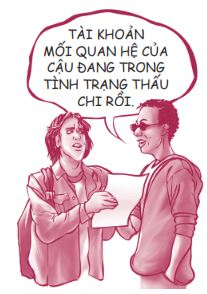
Xin chúc mừng! Bạn vừa ký gửi 500 đô-la vào tài khoản, nâng số dư của bạn lên 600 đô-la. Mối quan hệ giữa các bạn giờ đã có thể đứng vững trước những khoản rút nhỏ, bình thường chúng ta vẫn thường rút mỗi ngày (đôi khi là có chủ đích, đôi khi là do vô tình).
Tôi hy vọng giờ đây bạn đã thấy được cách chúng ta xây dựng các mối quan hệ.
Dưới đây là danh sách năm khoản ký gửi chủ chốt để xây dựng một tình bạn. Mỗi khoản ký gửi sẽ có một khoản rút ra tương ứng.
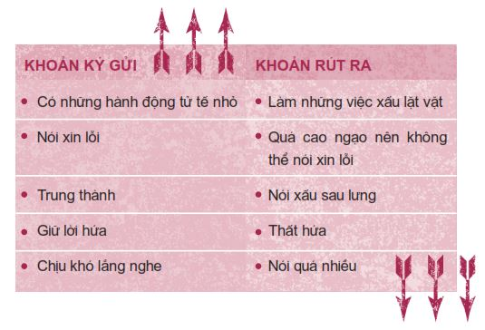
Khoản ký gửi ghi được nhiều điểm nhất với bạn bè là lắng nghe. Đây chính là Thói quen 5: Trước tiên hãy lắng nghe để hiểu người khác, sau đó mới giãi bày để người khác hiểu mình. Bạn thấy đó, tất cả mọi người đều muốn được thấu hiểu; đó chính là nhu cầu lớn nhất của con tim và là nền tảng của mọi sự giao tiếp hiệu quả. Đừng bao giờ quên rằng mỗi chúng ta đều có hai tai, nhưng chỉ có một miệng, hãy sử dụng chúng tương ứng nhé.
Mọi người đều nghe thấy những gì bạn nói.
Bạn bè lắng nghe những gì bạn nói.
Bạn bè tốt lắng nghe cả những gì bạn không nói.
DỄ GẦN VÀ THU HÚT HƠN
Bạn không thể khiến người khác thích mình, nhưng bạn luôn có thể khiến mình dễ gần và thu hút hơn. Bằng cách nào? Hãy nhìn ra những điểm yếu của mình và cố gắng hết sức cải thiện bản thân.
Nếu bạn đang gặp khó khăn trong việc kết bạn, hay dù bạn đã có nhiều bạn bè rồi, bạn vẫn nên trung thực nhìn lại chính mình để xem bản thân có phải kiểu người mà chính bạn muốn chơi cùng không. Thỉnh thoảng, hãy tự hỏi những câu hỏi sau đây và tự điều chỉnh bản thân nếu cần.
• Đã từng có ai nói với bạn rằng bạn khó chịu, quá ồn ào, kém duyên hay nói quá nhiều chưa?
• Bạn có gợi mở để người khác nói về cuộc sống của họ không? Hay bạn chỉ toàn nói về bản thân mình? Những người xung quanh có nói được lời nào khi trò chuyện cùng bạn không?
• Bạn có cần vệ sinh thân thể tốt hơn, tắm rửa thường xuyên hơn, dùng sản phẩm khử mùi, gội đầu và giặt quần áo thường xuyên hơn không?
• Bạn có biết cách ăn mặc phù hợp không? Quần áo của bạn có quá thiếu vải, lỗi thời, hay quá kỳ dị không? Bạn có lạm dụng việc trang điểm không? Bạn có biết trang điểm nhẹ không?
• Bạn có cho rằng mình tốt đẹp hơn người khác không? Hay bạn luôn tự hạ thấp bản thân, luôn than vãn và phàn nàn rằng mọi người đều ghét mình?
• Bạn có quá nghiêm khắc với bản thân không, hay bạn luôn phải cố tỏ ra hài hước và biến mọi việc thành trò đùa?
Để bản thân trở nên dễ thương hơn, hãy tập trung vào những việc bạn có thể kiểm soát, đừng tập trung vào những điều bạn không thể kiểm soát. Bạn không thể kiểm soát được chiều cao, các đặc điểm cố định về ngoại hình hay tạng người của mình. Tuy nhiên, bạn có thể kiểm soát điều kiện vệ sinh cá nhân, mức độ cân đối của cơ thể, phong thái, áo quần và dáng điệu của mình. Nhà thần học Reinhold Niebuhr đã tóm tắt nội dung này khá hay:
“Chúa đã ban cho tôi sự an nhiên để biết chấp nhận những gì tôi không thể thay đổi, lòng can đảm để thay đổi những gì tôi có thể thay đổi và sự khôn ngoan để nhận biết sự khác biệt giữa hai điều này.”
CỞI MỞ
Bạn có còn nhớ câu chuyện của Angela liên quan vấn đề kết bạn không? Khi cô ấy vào đại học, tình thế đã đảo ngược khi có một người bạn mới muốn được gia nhập vào nhóm bạn của cô ấy.
Khi vào đại học, mình đã gặp Leslie và bọn mình đã trở thành tri kỷ của nhau cho đến tận hôm nay. Cuối cùng, mình đã tìm được một cô bạn thân để có thể chia sẻ hết mọi bí mật và thậm chí mặc chung quần áo. Bọn mình cũng kết thân với hai chàng trai tuyệt vời khác. Họ rất vui tính và luôn bảo vệ bọn mình như những người anh trai. Bốn đứa mình luôn sát cánh bên nhau.
Lúc bấy giờ, có một cô bạn khác trong lớp tên là Alyssa. Cô ấy rất muốn được tham gia vào nhóm của bọn mình. Mình cũng không biết rõ tại sao mình lại phản đối việc này. Mình nghĩ có lẽ mình sợ rằng nếu được vào nhóm, cô ấy sẽ chiếm mất chỗ của mình.
Một hôm nọ, lúc bốn đứa bọn mình đang ngồi cùng nhau ở căng-tin, Alyssa đã mở lời muốn ngồi cùng bàn với bọn mình. Vì cảm thấy bị áp lực, mình đã đồng ý, nhưng thật lòng mình không hoàn toàn muốn thế.
Alyssa kéo ghế đến ngồi ở đầu bàn và bọn mình đã khiến bạn ấy cảm thấy bị cô lập và không thoải mái chỉ vì chỗ ngồi của bạn ấy trong bàn. Trong suốt bữa ăn, về cơ bản bọn mình đã phớt lờ bạn ấy, chỉ trò chuyện và cười đùa với nhau về những việc chỉ bốn đứa chúng mình biết.
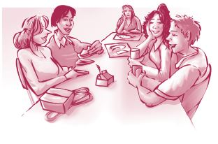
Sau đó ít lâu, Alyssa đã tìm gặp mình và nói rằng cô ấy đã sai khi cố xin ngồi cùng bọn mình. Cô ấy nói bọn mình đã thể hiện rõ thái độ không muốn cô ấy tham gia. Sau khi cô ấy đi, mình cảm thấy buồn muốn khóc. Mình không thể tin nổi mình đã khiến người khác cảm thấy tồi tệ như vậy. Điều tệ hại nhất chính là mình vẫn cứ làm điều đó dù biết rõ cô ấy cảm thấy ra sao. Cô ấy đã cô đơn đến tuyệt vọng thế mà mình lại cảm thấy không đủ vững tâm để chia sẻ tình bạn của mình với cô ấy, chỉ vì mình sợ bị mất đi những thứ bản thân đang có.
Kể từ đó, mình tự hứa với lòng sẽ không bao giờ khiến bất kỳ ai cảm thấy lạc lõng nữa. Mỗi khi thấy một ai đó không hòa nhập được với môi trường xung quanh, mình sẽ chủ động bước đến giới thiệu bản thân và làm mọi việc có thể để giúp họ cảm thấy thoải mái hơn.
Có thể bạn đang tận hưởng cảm giác an toàn khi được là thành viên trong một nhóm bạn khăng khít mà không nhận ra có những người bạn đứng ngoài đang rất muốn được tham gia. Ngay cả những bạn trông như có được tất cả mọi thứ vẫn thường cảm thấy bất an. Katie chính là một ví dụ điển hình.
Mình còn nhớ những khuôn mặt trên khán đài và tiếng ban nhạc đang chơi rộn ràng khi mình bước xuống sân cỏ. Hôm đó là ngày diễn ra trận đấu bóng đá trong Lễ hội Homecoming và mình đã được bầu chọn là Nữ hoàng Lễ hội. Vào giây phút mình được tuyên bố là người thắng cuộc, lần đầu mình cảm nhận được cảm giác đan xen giữa hạnh phúc và cô đơn như thế.
Đêm tiếp theo là đêm khiêu vũ Homecoming, nhưng mình không nhận được bất cứ lời mời hẹn hò nào. Có chuyện gì xảy ra với mình vậy? Sao mọi người lại bầu chọn cho mình rồi lại không có chàng trai nào muốn mời mình làm bạn nhảy cả?
Mình còn nhớ đã cảm thấy gần như bực mình với chiếc vương miện khi người ta đặt vương miện lên đầu mình. Mình đã có một đêm khiêu vũ Homecoming hết sức khổ sở. Mình ra về sớm và ghé nhà cô bạn Lindsey của mình với cảm giác vô cùng tủi thân. Tuy nhiên khi mình đến nơi, mọi người đã chào đón mình với những nụ cười ấm áp và những gương mặt thân thiện, và mình đã bật cười dù đang cảm thấy rất tồi tệ. Bọn mình đã có một buổi tối thật sự vui vẻ, chỉ toàn con gái với nhau, và khoảng thời gian tuyệt vời bên những người bạn đã thay đổi toàn bộ cảm xúc của mình về buổi tối tồi tệ hôm ấy.
Emily Dickinson đã viết:
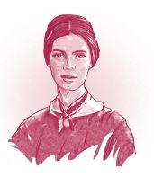
Họ có thể chẳng cần tôi
Nhưng tôi vẫn để trái tim mở cửa
Nụ cười bé nhỏ của tôi
Có thể chính xác là thứ họ cần
Những người bạn của Katie có lẽ không bao giờ biết rằng chính nụ cười của họ đã cứu vớt Katie khỏi một đêm phiền muộn.
Hãy cởi mở với bạn bè. Hãy mở rộng lòng mình chào đón họ.
LẤY ÂN BÁO OÁN
Đã bao nhiêu lần bạn nghe được những câu nói đại loại như: “Sao tớ phải tử tế với cậu ta trong khi cậu ta cực kỳ thô lỗ với tớ chứ?”. Thật dễ tử tế với những người tử tế với bạn. Ai cũng có thể làm thế. Thách thức thật sự chính là đối xử tử tế với những người xấu tính - lấy ân báo oán. Nhưng nếu ta làm được điều này, những điều tuyệt vời sẽ đến.
Ở Romania, một cô bé tên Iulia vừa chuyển đến trường mới và nhận được nhiều sự chú ý bởi vì cô bé là học sinh mới. Việc này khiến các cô bé nổi tiếng hơn ganh ghét nên họ đã chơi xấu cô bé. Họ bắt đầu nói sau lưng và lan truyền những tin đồn xấu xa về Iulia. Họ cố tình loại Iulia ra khỏi các hoạt động của lớp và thể hiện rõ thái độ không chào đón cô bé vào nhóm.
Việc này khiến cuộc sống của Iulia khổ sở đến mức cô bé đã nghĩ đến việc chuyển trường. Nhưng một cô bé tên là Catalina đã cố gắng làm bạn với Iulia. Lúc ấy, Iulia đang chuẩn bị tổ chức tiệc sinh nhật của mình và Catalina đã khuyến khích cô bé mời những cô bạn gái đang nói xấu mình đến dự tiệc.
Lúc đầu, Iulia phản đối ý tưởng này. Nhưng sau khi nghĩ kỹ lại, cô bé quyết định đối xử tử tế đối với họ. Các cô gái kia đã kết sức ngạc nhiên khi nhận được thiệp mời đến dự bữa tiệc sinh nhật thịnh soạn của Iulia. Họ không chỉ đến dự mà còn mang theo hoa và quà để xin lỗi Iulia vì những việc họ đã làm. Những cô gái từng muốn hủy hoại thanh danh của Iulia giờ lại bắt đầu yêu mến cô bé khi được cho thêm cơ hội.
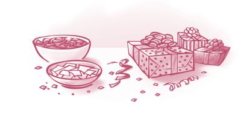
Tổng thống Abraham Lincoln thường bị chỉ trích vì cố làm bạn với kẻ thù của mình thay vì loại bỏ họ. Ông đáp: “Chẳng phải đó là cách để biến kẻ thù thành bạn sao?”.
NÂNG ĐỠ NGƯỜI KHÁC
Tôi có biết một anh chàng tên Kyle. Cậu ấy có một tuổi thơ êm đềm bên những người bạn hàng xóm tuyệt vời. Nhưng vào năm lớp Mười Hai, cậu bé bắt đầu chơi chung với một nhóm thiếu niên nhiều tai tiếng và dần xa rời những người bạn cũ. Một lần nọ, nhóm bạn mới của Kyle đã cho cậu dùng thử một hỗn hợp thuốc kích thích nguy hiểm rồi bỏ mặc cậu ở nhà, để cậu một mình chịu đựng một cơn say thuốc kinh khủng - thứ đã suýt nữa khiến cậu mất mạng.
Sau khi Kyle hoàn tất chương trình cai nghiện, cha mẹ cậu đã hỏi những người bạn cũ của cậu liệu họ có đồng ý để cậu trở lại chơi chung với họ như trước không. Thay vì khước từ, các bạn cũ đã chào đón cậu quay trở lại.
Lúc đầu, những người bạn cũ cảm thấy không thật sự thoải mái với Kyle vì cậu ấy vẫn ăn mặc như một tên du côn và liên tục ba hoa về những thứ cậu từng thử. Không ai trong những người bạn hàng xóm ấy nghiện ma túy và họ cũng không hề hứng thú với lối sống đó. Nhưng họ vẫn kiên nhẫn và tiếp tục mời Kyle đi chơi bóng rổ và tham gia các hoạt động cộng đồng dành cho thanh thiếu niên. Ngày qua ngày, Kyle dần thay đổi bộ dạng và cách ăn mặc của mình sao cho phù hợp với bạn bè xung quanh. Sau đó, cậu và nhóm bạn đã nhanh chóng tìm lại được những sở thích chung: chơi thể thao và leo núi. Họ cũng thường xuyên đến nhà nhau chơi.
Một năm sau, nhờ luôn có bạn bè ở bên cạnh và sự nỗ lực, quyết tâm cao của bản thân, Kyle đã hoàn toàn xoay chuyển cuộc đời mình. Sự tiến bộ của cậu thậm chí còn là nguồn cảm hứng giúp các bạn hàng xóm đối mặt và vượt qua những thử thách của bản thân.
Kyle có hai nhóm bạn khác nhau. Một nhóm khiến cậu sa sút và khơi gợi những điều tồi tệ trong cậu. Nhóm còn lại giúp cậu tiến bộ và nuôi dưỡng những điều tốt đẹp nhất nơi cậu. Bạn bè của bạn thuộc nhóm nào? Để tìm ra câu trả lời, bạn hãy tự hỏi: Bạn có trở thành một con người tốt đẹp hơn khi ở cạnh các bạn mình hay không?
Trong thể thao, thỉnh thoảng bạn sẽ gặp một vận động viên có sức ảnh hưởng độc đáo - người có thể nâng thành tích các đồng đội của mình lên. Michael Jordan, cầu thủ bóng rổ tuyệt vời nhất mọi thời đại, là một trong những người như thế. Mọi người chơi hay hơn khi anh ấy có mặt trên sân. Đây chính là kiểu bạn chúng ta muốn có. Đây cũng chính là kiểu bạn chúng ta muốn trở thành - một người có thể nâng cao thành tích của mọi người xung quanh mình. Vì vậy, thỉnh thoảng bạn hãy tự hỏi: Các bạn mình có đưa ra những quyết định sáng suốt hơn khi có mình bên cạnh không?
Tôi đã đọc ở đâu đó về việc các học sinh trường Trung học Murray đã bầu chọn Shellie Eyre trở thành Nữ hoàng Lễ hội Homecoming của trường. Shellie, mười bảy tuổi, học sinh lớp Mười Hai, mắc Hội chứng Down từ khi mới lọt lòng. Một trong những người bạn đồng hành của cô, April Perschon, cũng mắc một số khuyết tật về thể chất và tâm thần do di chứng của căn bệnh xuất huyết não năm cô ấy lên mười tuổi. Khi Shellie và các bạn đồng hành của mình được trao vương miện, cả khán phòng đã đồng loạt đứng dậy hoan hô.
Khi tiếng vỗ tay đã ngưng, thầy phó hiệu trưởng phát biểu: “Đêm nay, các em học sinh đã bầu chọn cho nét đẹp tâm hồn”. Tất cả phụ huynh, thầy cô giáo và học sinh đều rơi nước mắt. Một học sinh chia sẻ: “Vì quá hạnh phúc nên em đã khóc. Em nghĩ trường Trung học Murray thật tuyệt vời khi làm được việc này”. Đây là một ví dụ tuyệt vời về một nhóm bạn giúp nâng cao thành tích của tất cả mọi người!
Nhà thơ John Greenleaf Whittier có những câu thơ rất hay về vấn đề này:
Áp lực bạn bè
“Chúng ta đang ở độ cao bao nhiêu rồi?”. Tôi hét lên hỏi mấy đứa bạn đang đứng dưới thuyền.
Các bạn hét trả lời tôi: “Khoảng hai mươi mét. Giờ cậu nhảy đi nào”.
Tôi la lên: “Tớ không biết nữa. Trên này nhìn có vẻ cao quá”.
Lúc bấy giờ tôi đang ở hồ Powell chơi trò nhảy vách đá cùng mấy đứa bạn. Chúng tôi bắt đầu ở độ cao tầm mười mét, nhưng rồi cả bọn cứ liên tục thách nhau lên cao hơn, cao hơn nữa. Áp lực tâm lý hết sức căng thẳng vì không ai muốn bị xem là kẻ nhát gan.
“Thôi nào, nhảy đi chứ!”
Lấy hết can đảm, tôi nhảy xuống.
Trong lúc rơi xuống, tôi cứ nghĩ mãi: “Mình quả là một thằng ngốc!”.
Khi rơi xuống mặt hồ, tôi cảm thấy mặt nước cứng như bê tông và toàn thân tôi rung lắc dữ dội. Tôi hoảng hốt, cố ngoi lên mặt nước để hớp lấy không khí. Tôi nhanh chóng kiểm tra cơ thể và hết sức nhẹ nhõm khi thấy thân thể mình còn nguyên vẹn. Phù!
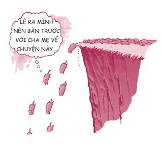
Áp lực bạn bè khiến bạn làm những việc ngu ngốc, những việc mà bình thường bạn sẽ không làm khi ở một mình hoặc khi đã suy nghĩ thấu đáo. Khi bị bạn bè gây áp lực, bạn giống như bỏ quên não ở nhà vậy.
Tôi còn nhớ từng đọc câu chuyện về một cậu bé mười bốn tuổi ở thành phố New York bị bạn bè thách trèo lên nóc tàu điện ngầm “lướt sóng”. Vì không muốn làm bạn bè thất vọng, cậu bé đã thực hiện lời yêu cầu và bị một thanh dầm đập vào người. Cậu rơi xuống đường ray đối diện và đã bị một đoàn tàu điện đang lao tới cán qua người dẫn đến tử vong. Ai biết được cậu ấy đáng ra đã có thể làm gì với cuộc đời mình?
Vậy áp lực bạn bè chính xác là gì? Đó là khi bạn cảm thấy bị áp lực bởi bạn bè cùng lứa và buộc lòng phải hành động theo một cách nhất định nào đó. Áp lực tích cực là khi bạn bè kỳ vọng ban làm những điều tốt đẹp. Áp lực tiêu cực là khi bạn bè thuyết phục bạn phải nghe theo hoặc làm một việc mà bạn không muốn, chẳng hạn như bỏ học, ăn cắp vặt, quan hệ tình dục, chơi ma túy, nói dối, phá hoại, chửi thề, ăn mặc theo một phong cách nào đó, nói xấu sau lưng hay bắt nạt người khác, v.v.
Bạn thuận theo các bạn vì bạn muốn được họ chấp nhận, muốn làm hài lòng họ. Bạn không muốn bị chú ý. Bạn chỉ muốn giống như mọi người.
Mette đến từ Đan Mạch đã kể tôi nghe việc cô ấy bị áp lực bạn bè phải bắt nạt một người khác:
Hồi trung học, có một lần mình đến một bữa tiệc cùng vài bạn nam trong lớp. Giữa lúc bữa tiệc đang diễn ra thì có một cậu bạn đến. Cậu ấy mắc một chứng bệnh khiến cơ thể giữ nước nên cậu ấy trông rất béo. Bọn con trai cùng lớp với mình quyết định chơi một trò chơi. Bọn mình sẽ rút thăm để chọn ra một người, người đó sẽ bước đến chỗ cậu bạn kia, vỗ vai cậu ấy và hỏi vì sao cậu ấy lại có ngực như phụ nữ như thế. Bọn mình rút thăm và mình thua cuộc. Thế là mình đã làm một việc khiến mình phải hối hận đến mãi về sau. Mình cảm thấy quá áp lực, bởi nếu mình không làm, tụi bạn sẽ nghĩ mình là đồ thảm hại. Thế nên mình đã bước đến chỗ cậu bạn ấy, nói ra những lời kinh khủng kia rồi chuồn thẳng vào nhà vệ sinh. Lũ bạn nghĩ mình thật ngầu, nhưng mình lại cảm thấy bản thân là một kẻ hết sức tồi tệ. Mình đã không đến xin lỗi cậu bạn ấy và vì thế, kể từ đó mình không dám nhìn thẳng vào mắt cậu ấy nữa. Bọn con trai vẫn đem chuyện đó ra cười cợt và vỗ vai mình trêu chọc khiến mình thấy cắn rứt lương tâm vô cùng. Trước đây mình cũng từng bị hiếp đáp, nên mình vô cùng ngạc nhiên khi bản thân lại có thể nghĩ đến chuyện khiến người khác cảm thấy đau khổ như vậy.
Nếu chỉ có một mình, chúng ta thường không nghĩ đến chuyện làm những việc quá xấu xa. Nhưng khi đứng trước một đám đông và phải chịu áp lực, chúng ta sẽ bỏ quên não ở nhà và làm những việc ngu ngốc. Trong tập phim Harry Porter và Hòn đá phù thủy , giáo sư Dumbledore đã nói:
“Ta phải vô cùng can đảm để chống lại kẻ thù của mình, nhưng ta còn phải can đảm nhiều hơn thế để chống lại bạn bè của ta.”
Để đứng vững trước áp lực bạn bè, bạn cần một cơ chế phòng thủ cho riêng mình. Tôi gọi đó là tấm khiên chống lại áp lực bạn bè. Ba yếu tố chủ chốt của tấm khiên này là sự chuẩn bị, hệ thống hỗ trợ vững chắc và lòng can đảm ngay tức thời.
SỰ CHUẨN BỊ
Tôi cho rằng chúng ta dễ dàng đầu hàng trước áp lực bạn bè là do trước đó chúng ta đã không có sự chuẩn bị và không suy nghĩ thấu đáo về những việc chúng ta nên làm trong những tình huống nhạy cảm. Dưới đây là một vài tình huống căng thẳng mà bạn nên chuẩn bị trước cách đối phó ngay bây giờ.
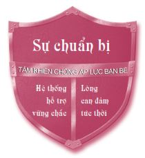
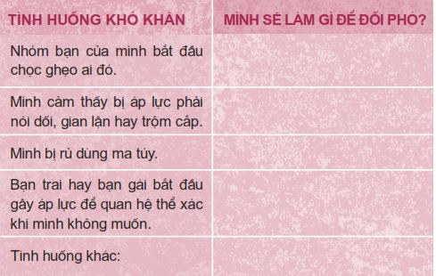
Đặt mục tiêu rõ ràng
Nếu bạn nắm rõ các mục tiêu của mình, việc nói không với áp lực bạn bè sẽ trở nên dễ dàng hơn rất nhiều. Một lần nọ, khi tôi trò chuyện với một nhóm học sinh và hỏi liệu có ai muốn xung phong chia sẻ với các bạn các mục tiêu của mình không, một học sinh lớp Mười tên Kameron đã bước lên phát biểu.
Dựa vào kinh nghiệm của mình, tôi cứ nghĩ cậu ấy sẽ xổ một tràng về những mục tiêu mà thật ra cậu chưa nghĩ đến. Nhưng không, cậu ấy đã mở ví, lấy ra một tấm thẻ được ép nhựa và đọc các mục tiêu của mình cho cả nhóm nghe.
• Đạt được và duy trì điểm trung bình 3,7/4.
• Đạt tiêu chuẩn BFS (bigger, faster, stronger - lớn hơn, nhanh hơn, mạnh hơn). Đến năm lớp Mười Hai sẽ đạt cân nặng 90 kí-lô-gam, có thể chạy 36 mét trong 4,6 giây và nâng tạ 90 kí-lô-gam tám lần.
• Trở thành một trong hai mươi hai cầu thủ trong đội bóng của trường tham gia trận đấu mở màn vào năm lớp Mười Hai. Nỗ lực hết mình để giành được cúp vô địch quốc gia.
• Trở thành một người anh tốt và tấm gương sáng cho ba người em trai.
Mọi người đã rất ấn tượng và nghĩ: “Chà, có lẽ mình cũng nên đặt ra một số mục tiêu cụ thể như thế”. Với những mục tiêu cụ thể này, Kameron có thể dễ dàng chống lại những áp lực tiêu cực từ bạn bè, học hành chăm chỉ, giữ gìn cơ thể cân đối và đối xử tôn trọng với các em trai, bất chấp những áp lực từ bên ngoài.
Khi bắt đầu làm bất cứ việc gì, hãy nghĩ đến cái đích đến mình muốn đến và xác định rõ điều bạn muốn. Nếu bạn vẫn chưa làm được, hãy viết ra một số mục tiêu hoặc một lời xác quyết. Laney Oswald chia sẻ rằng chính lời xác quyết đơn giản của mình đã giúp bạn ấy sống đúng với các giá trị của bản thân và nói không với những gì bạn ấy không muốn làm.
Lời xác quyết của Laney
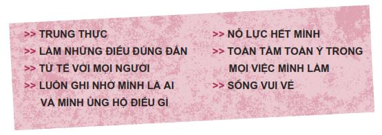
Giành lấy những Chiến thắng nhỏ hằng ngày
Ngay trong phòng riêng của mình, bạn có thể vượt qua những thách thức bạn gặp phải mỗi ngày ngoài xã hội trước khi những thử thách này thật sự xảy đến với bạn. Để làm được việc đó, bạn chỉ cần thực hiện một thói quen đơn giản gồm ba bước và chỉ mất hai mươi phút vào mỗi sáng hoặc tối. Tôi gọi thói quen này là Chiến thắng nhỏ hằng ngày.
• Kết nối với bản thân bằng cách viết nhật ký, đọc những tác phẩm văn chương tạo cảm hứng, cầu nguyện, thiền hay làm bất cứ việc gì có thể tạo cảm hứng cho bạn và giúp bạn hiểu hơn về chính mình.
• Xem lại những mục tiêu, khát vọng và lời xác quyết của bạn.
• Hình dung những thách thức bạn có thể sẽ gặp phải vào ngày hôm sau. Quyết định xem bạn sẽ xử lý những thách thức này bằng cách nào.
Tôi làm việc này vào hầu hết các buổi sáng và chỉ mất khoảng hai mươi phút. Thói quen này đặt ra những giới hạn giúp tôi có thể chống lại áp lực bạn bè (cả người lớn cũng gặp phải áp lực này) và giúp tôi chuẩn bị bản thân để chào đón một ngày thành công. Khi những thách thức ấy diễn ra, tôi có sẵn chiến lược chinh phục trong đầu rồi.
HỆ THỐNG HỖ TRỢ VỮNG CHẮC
Sau khi bạn đã thực hiện công tác chuẩn bị, bước tiếp theo trong việc xây dựng chiếc khiên bảo vệ bản thân khỏi áp lực bạn bè chính là xây dựng một hệ thống hỗ trợ vững chắc. Hãy ở cạnh những người bạn, người thân và những người trưởng thành đáng tin cậy, truyền cảm hứng để bạn trở thành phiên bản tốt nhất của bản thân. Hãy cùng nhau thiết lập các mục tiêu và hỗ trợ, thúc đẩy nhau thực hiện những mục tiêu đó. Đồng thời, hãy tham gia các hoạt động ngoại khóa. Những hoạt động này cũng đóng vai trò là các yếu tố hỗ trợ tuyệt vời. Nếu bạn đang là thành viên của một đội thể thao hay tham gia đội kịch ở trường, bạn sẽ không có thời gian vướng vào rắc rối. Rắc rối thường xảy ra khi bạn không có việc gì để làm.
Hãy xem năm chàng trai đến từ Memphis, Tennessee đã xây dựng hệ thống hỗ trợ tích cực của họ như thế nào nhé.
Khi Ahmaad, Derron, Victor, Tyrone và Tyjuan học cấp ba, họ nhận thấy phần lớn bạn bè mình biết đều không thành công và thường gặp rắc rối với luật pháp. Một số bạn khác thì nghiện ma túy, rượu chè và phải làm ca đêm những công việc được trả lương rất thấp. Những người bạn này hầu như không có cơ hội cải thiện tương lai của mình vì họ đều đã bỏ học. Năm chàng trai nhận ra dường như họ cũng đang đi trên cùng một con đường với những người bạn kia.
Họ thường tâm sự với nhau rằng họ muốn sống một cuộc đời ý nghĩa hơn quyết định rằng họ muốn thoát khỏi những định kiến về chủng tộc và đạt được thành công trong cuộc sống. Thay vì phải làm ca đêm, họ muốn trở thành những anh chàng ăn mặc bảnh bao, ngồi sau bàn giấy phê duyệt các hợp đồng cho vay hoặc làm việc trong những ngành có thu nhập ổn định hơn.
Một ngày nọ, trong một buổi họp mặt, năm chàng trai đã đặt ra một thỏa thuận chung. Thứ nhất, họ nhất trí rằng tất cả phải đạt điểm đủ cao để vào đại học. Thứ hai, họ nhất trí tuyệt đối không đụng đến ma túy. Thứ ba, họ nhất trí không đụng đến rượu. Gia đình của Victor đã phải chịu đựng nạn ngược đãi vì chứng nghiện rượu và cậu muốn chấm dứt nỗi đau này.
Thỏa thuận này đã tạo nên những ảnh hưởng phi thường lên cuộc sống của năm chàng trai.
Năm Ahmaad học lớp Chín, cậu tham gia đội tuyển bóng bầu dục của trường và được nhiều học sinh lớp trên chú ý. Họ bắt đầu rủ cậu đi chơi chung. Vì lo lắng Ahmaad sẽ bị nhiễm những thói xấu từ những học sinh lớp trên kia, bốn người bạn thân của Ahmaad đã đến tìm cậu và nói: “
Bọn mình
mới là bạn của cậu, Ahmaad ạ. Cậu không cần phải đi chơi với những người đó”.
Lúc đầu, Ahmaad rất giận dữ khi các bạn xen vào việc riêng của mình. Khi ấy, cậu cảm thấy bản thân được tâng bốc vì nhận được chú ý của các học sinh lớp trên. Nhưng cậu biết các bạn của mình nói đúng. Kể từ đó, mối quan hệ giữa cậu và các bạn lại khắng khít như trước.
Ahmaad tiếp tục đạt những thành tích xuất sắc trong môn bóng bầu dục và được nhận học bổng về chơi cho Đại học Alabama. Cậu là một trong năm người vào đến vòng chung kết giải thưởng Doak Walker - giải thưởng danh giá được trao cho trung vệ chạy giỏi nhất cấp quốc gia. Đáng tiếc thay, sau đó cậu đã bị chấn thương đầu gối. Hầu hết mọi người đều nghĩ cậu sẽ không thể quay trở lại sân bóng. Thế nhưng, nhờ chăm chỉ luyện tập và kiên trì theo đuổi liệu trình phục hồi chức năng, cuối cùng Ahmaad đã được Liên đoàn Bóng bầu dục Quốc gia (NFL) thu nhận. Hiện tại cậu đang làm việc cho một hãng luật.
Derron và Tyjuan cũng trở thành những vận động viên thể thao xuất sắc và là ngôi sao trong đội bóng rổ của trường. Cả hai người đều nhận được học bổng của Đại học Fisk, nơi họ cùng theo học và là bạn cùng phòng của nhau. Sự nghiệp chơi bóng của Derron đang phát triển rất rực rỡ thì mẹ cậu bị chẩn đoán mắc ung thư. Cậu đã lập tức xin rời đội và bay về nhà để chăm sóc mẹ và lo cho cậu em trai của mình. Trước khi mẹ cậu mất, cậu đã hứa với mẹ sẽ cố gắng học xong đại học và nuôi dạy cậu em trai mười bốn tuổi của mình. Cậu đã hoàn thành lời hứa của mình với mẹ. Cậu không hề hối tiếc về những quyết định của mình.
Tyjuan đã tốt nghiệp đại học và hiện tại cậu đang phụ trách giảng dạy cho trẻ em có nhu cầu đặc biệt, đồng thời là huấn luyện viên đội bóng rổ của trường. Cậu và Derron vẫn là bạn rất thân của nhau và thường đi nghỉ mát cùng nhau.
Victor học rất giỏi. Cậu tốt nghiệp đại học và trở thành thầy giáo ở California. Giờ đây, cậu chuyên giúp thanh thiếu niên thuộc nhiều tầng lớp khác nhau giành được thành công trong cuộc sống trước vô vàn những thách thức khác nhau.
Tyrone cũng là một vận động viên thể thao rất thành công và hiện đang chơi trong Liên đoàn Bóng bầu dục Quốc gia. Mặc dù cậu ấy chưa tốt nghiệp đại học, cậu đã cam kết sẽ lấy được tấm bằng.
Dù gặp phải nhiều khó khăn, trắc trở, tất cả năm người họ đã tạo dựng nên cho mình một cuộc sống tuyệt vời; bốn trong năm người đã tốt nghiệp đại học. Họ có trình độ chuyên môn và có thể ăn mặc bảnh bao bất cứ khi nào họ muốn. Khi nhìn lại những gì năm người đã trải qua cùng nhau, Ahmaad nói:
“Bạn bè cực kỳ quan trọng, đặc biệt nếu các bạn nhất trí với nhau về một số giá trị nhất định và luôn hỗ trợ lẫn nhau. Chúng tôi luôn trò chuyện cởi mở với nhau. Cũng có những lúc chúng tôi bất đồng quan điểm, nhưng chúng tôi giúp nhau đưa ra những quyết định đúng đắn, dù đôi khi đó không phải là những quyết định dễ dàng. Tất cả chúng tôi đều muốn giúp nhau thành công. Đây chính là hệ thống hỗ trợ của chúng tôi. Chúng tôi dõi theo nhau và giữ cho nhau được cân bằng.”
Nhà thơ người Mỹ Edwin Markham đã viết:
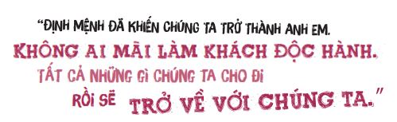
Băng đảng
Những bạn trẻ không có một hệ thống hỗ trợ vững chãi thường sẽ gia nhập một băng đảng. Thật ra, đó cũng là một dạng hệ thống hỗ trợ, chỉ có điều đó không phải loại chúng ta muốn mà thôi. Một khi bạn đã gia nhập băng đảng, bạn sẽ phải chịu những áp lực bạn bè hết sức khổng lồ. Một bạn trẻ người Tonga tên Haloti Moala đã kể tôi nghe về cuộc sống trong băng đảng.
Haloti lớn lên tại Tonga, trong một gia đình có chín người con. Cha mẹ của cậu bé biết rằng nếu muốn con cái có tương lai, họ phải rời khỏi Tonga vì quốc gia này có tỷ lệ thất nghiệp rất cao và họ có rất ít cơ hội được học hành đến nơi đến chốn tại đây. Sau khi dành dụm được ít tiền từ chín năm ròng làm nghề bẫy cá, cha của Haloti đã đưa cả gia đình đến California, nơi ông tin rằng những giấc mơ ông dành cho các con sẽ thành hiện thực.
Gia đình của Haloti sống ở Lennox, một khu ổ chuột tại Englewood. Cuộc sống cả bên trong lẫn bên ngoài trường học đều khắc nghiệt nên không bao lâu sau, Haloti đã tham gia băng đảng.
Khi nhìn lại, tôi nhận ra hoạt động trong băng đảng đã ảnh hưởng đến con người tôi về mọi mặt, từ quần áo tôi mặc, bạn bè tôi chơi chung, đến những việc phạm pháp tôi làm và những gì tôi xem trọng mỗi ngày. Chúng tôi không quan tâm đến bất kỳ ai ngoài bản thân mình và suốt ngày chỉ biết trộm cắp, đánh nhau và gây rắc rối khắp nơi. Cha mẹ tôi không biết việc chúng tôi làm vì họ quá bận rộn lao động kiếm sống. Tôi từng cho rằng cha mẹ không hề hỗ trợ tôi bất cứ thứ gì, giờ tôi mới nhận ra họ đã cố gắng hỗ trợ tôi theo cách duy nhất họ có thể làm.
Haloti không chơi ma túy, nhưng vào năm lớp Tám, cậu bé đã bắt đầu bán ma túy để kiếm tiền và tiếp tục ở trong băng đảng. Đó cũng là lúc mọi việc thay đổi.
Lúc tôi đang thực hiện một vụ mua bán ma túy với một đứa bạn, có mấy gã lái xe tới và bắt đầu la lối về mớ ma túy kém chất lượng tôi đã bán cho họ trước đó. Bất thình lình, một người nào đó trong xe nổ súng bắn bạn tôi, rồi họ lái xe đi. Tôi đã chứng kiến cảnh người bạn thân nhất của mình chảy rất nhiều máu và chết ngay trên đường.
Tôi không thể tin nổi những gì vừa diễn ra. Người thân thiết nhất với tôi trên đời vừa ra đi. Nếu viên đạn đi chệch vài phân thôi, người đang nằm đó rất có thể đã là tôi. Tôi biết không sớm thì muộn, tôi cũng sẽ có kết cục bi thảm như thế thôi.
Khi cảnh sát đến nơi, họ kết luận đó là một vụ nổ súng từ trên xe. Nhưng tôi biết rõ hơn cả. Chính ma túy, băng đảng và những quyết định sai lầm nối tiếp nhau đã giết chết bạn tôi. Kể từ giây phút đó, tôi không cố gắng tránh xa ma túy và băng đảng, mà tôi chấm dứt lối sống cũ ngay lập tức. Tôi nhận ra rằng những người ta chơi cùng thể hiện con người ta và tôi không muốn sống một cuộc đời chỉ biết có trộm cắp, dối trá và bạo lực nữa.
Cũng vào khoảng thời gian này, Haloti đã dọn về sống chung với chị gái và anh rể mình. Anh rể đã trở thành người dẫn dắt Haloti quay trở lại với trường học và thể thao. Chị gái và anh rể đã trở thành hệ thống hỗ trợ mới của cậu. “Dù đã thôi chơi chung với những thành viên băng đảng, phải mất ít lâu tôi mới bỏ được tâm tính cũ. Thỉnh thoảng tôi vẫn dính líu đến mấy vụ ẩu đả.”
Sau khi tốt nghiệp trung học, Haloti vào Đại học Utah, nơi cậu chơi bóng đá, lấy được tấm bằng đại học và gặp vợ cậu. Hai thập niên sau, Haloti giờ đang nuôi nấng các con mình và thực hiện ước mơ của cha mẹ cậu. Đáng buồn thay, vài người em trai của Haloti đã không thể thoát khỏi cuộc sống băng đảng và vẫn vào tù ra khám như cơm bữa.
Haloti nói: “Tôi thật may mắn. Ngày người bạn thân của tôi ra đi, tôi đã thức tỉnh và thoát khỏi lối sống sẽ sớm hủy hoại tôi”.
Nếu bạn đang nghĩ đến việc tham gia một băng đảng, hãy suy nghĩ lại. Nếu bạn đang ở trong băng đảng, hãy cố thoát ra khi còn có thể. Hãy lắng nghe tiếng nói bên trong mình. Nếu tiếng nói ấy nói rằng có gì đó không ổn với nhóm bạn của bạn, đừng đi chơi với họ nữa! Không có hệ thống hỗ trợ nào vẫn tốt hơn có một hệ thống sai lầm.
Dưới đây là những dấu hiệu khẩn cấp cho thấy bạn nên chơi với một nhóm bạn mới.
1. Bạn phải thay đổi cách ăn mặc, nói năng, bạn bè và chuẩn mực sống của mình nếu muốn chơi với họ.
2. Bạn phải làm những việc mình cảm thấy không ổn, như trộm cắp, đánh nhau hoặc dùng ma túy.
3. Bạn cảm thấy mình đang bị lợi dụng.
4. Bạn cảm thấy không thể kiểm soát cuộc sống của mình.
LÒNG CAN ĐẢM TỨC THỜI
Dù bạn có chuẩn bị tốt đến đâu hay hệ thống hỗ trợ của bạn có mạnh đến đâu, sẽ có những lúc bạn phải đối mặt với áp lực bạn bè trong những tình huống khó khăn không thể đoán trước được. Bạn sẽ không có thời gian để suy nghĩ mà phải thể hiện sự can đảm ngay tức thì.
Kourtney là học sinh lớp Mười trường Trung học Skyline. Một hôm trên đường đi học về, cô bé đi ngang qua một nhóm thanh niên đang đứng giữa đường. Khi tiến đến gần, cô nhận ra một trong số đó là cậu bé hàng xóm nhỏ tuổi hơn của cô, cậu bé tên là John. Cậu bé trông có vẻ rất sợ hãi khi bị mấy thanh niên lớn tuổi hơn trêu chọc và bị hết người này đến người khác xô đẩy qua lại. Kourtney quên phắt việc mình nhỏ tuổi hơn mấy thanh niên kia và dù sao cũng là con gái, cô ngay lập tức chen vào giữa đám đông và đối mặt với những tên bắt nạt kia.
“Này, các anh đang làm gì John vậy? Mấy anh thật không đáng mặt nam nhi! Xem các anh đang làm gì kìa, mười người ăn hiếp một người à? Để cậu ấy yên đi. Các anh mau biến khỏi đây! Biến đi! Tôi nói nghiêm túc đấy!”
Thật ngạc nhiên, sau vài giây im lặng và vài câu nói lí nhí, những kẻ bắt nạt kia từ từ lùi lại. Sau chừng một phút, họ lần lượt bỏ đi hết. John thở phào nhẹ nhõm, nói lời cảm ơn Kourtney và vội vã chạy về nhà.
Tối hôm đó, John đã gọi điện cho Kourtney và nói rằng cậu ấy đã không biết phải làm gì lúc đó nếu Kourtney không đến. Cậu bé xúc động nói: “Em còn không nghĩ chị biết tên của em”.
Khi nhớ lại sự việc, Kourtney thú thật: “Tớ cũng không biết phải làm gì nếu bọn họ không chịu bỏ đi. Tớ chỉ biết rằng việc đó không đúng. Có lẽ họ cũng biết vậy và tớ chỉ thúc đẩy họ làm theo phần chính nghĩa trong mình mà thôi”.
Vào những thời điểm khó khăn, tôi hy vọng chúng ta cũng có thể hành động can đảm như Kourtney vậy.
DÙ THẾ NÀO, CỨ LÀ MỘT NGƯỜI BẠN
Chúng ta đã nói rất nhiều về bạn bè; làm thế nào để chọn bạn, kết bạn và trở thành một người bạn tốt. Tôi khuyến khích các bạn hãy chọn con đường đúng đắn. Hãy chọn những người bạn giúp nâng tầm chúng ta, trở thành một người bạn tốt và can đảm chống lại áp lực tiêu cực từ bạn bè. Hãy cẩn thận, đừng xem bạn bè là trọng tâm cuộc sống của chúng ta. Nếu bạn không có đủ bạn bè, hãy làm theo những chỉ dẫn thiết yếu để kết thêm bạn tốt. Chắc chắn bạn sẽ thành công.
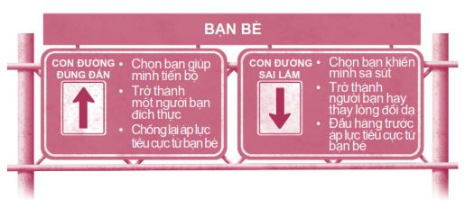
Nếu bạn từng đưa ra nhiều quyết định thiếu sáng suốt liên quan đến quan hệ bạn bè trong quá khứ, đừng liên tục tự dằn vặt bản thân vì điều đó. Hãy học hỏi từ những sai lầm. Bạn có thể bắt đầu đưa ra những quyết định khôn ngoan hơn ngay từ bây giờ.
Một trong những con người tuyệt vời nhất trong thời đại chúng ta chính là Mẹ Teresa, một phụ nữ nhỏ nhắn, mỏng manh đã hiến dâng cả cuộc đời để giúp đỡ những người nghèo khổ, bệnh tật ở các quốc gia nghèo đói. Từ những khu ổ chuột ở Calcutta, Ấn Độ, tầm ảnh hưởng của bà giờ đã lan rộng ra khắp nơi trên thế giới. Bà không sở hữu bất cứ tài sản nào, không có chức danh và cũng không hề tìm kiếm tiếng tăm. Thế mà bà đã trở thành nguồn cảm hứng cho hàng triệu người. Trên bức tường nhà bà ở Calcutta có một bài thơ rất hay, đó là một phiên bản khác của bài thơ The Paradoxical Commandments (tạm dịch: Những điều răn mâu thuẫn ) do Kent Keith sáng tác. Tôi luôn xem những lời dạy này là nguyên tắc ứng xử trong quan hệ bạn bè của mình.
Con người vẫn thường ngang ngược, phi lý và ích kỷ.
Dù sao đi nữa, hãy cứ yêu thương họ.
Nếu bạn làm việc tốt, người ta sẽ cáo buộc bạn
Có những động cơ ích kỷ tiềm ẩn bên trong.
Dù sao đi nữa, hãy cứ làm việc tốt.
Nếu bạn thành công, bạn sẽ có bạn bè giả và kẻ thù thật.
Dù sao đi nữa, hãy cứ thành công.
Điều tốt đẹp bạn làm hôm nay có thể bị lãng quên vào ngày mai.
Dù sao đi nữa, hãy cứ làm việc tốt.
Lòng trung thực và sự thẳng thắn khiến bạn dễ bị tổn thương.
Dù sao đi nữa, hãy cứ trung thực và thẳng thắn.
Những con người vĩ đại có những ý tưởng vĩ đại có thể bị hạ gục bởi
Những kẻ nhỏ mọn có đầu óc nhỏ mọn.
Dù sao đi nữa, hãy cứ nghĩ lớn.
Con người ưu ái kẻ yếu thế, nhưng chỉ đi theo kẻ dẫn đầu.
Dù sao đi nữa, hãy cứ đấu tranh cho người yếu thế.
Những thứ bạn dành nhiều năm để gầy dựng
Có thể bị hủy hoại chỉ sau một đêm.
Dù sao đi nữa, hãy cứ gầy dựng.
Những người thật sự cần sự giúp đỡ
Lại có thể tấn công bạn khi bạn giúp họ.
Dù sao đi nữa, hãy cứ giúp đỡ người khác.
Bạn cống hiến hết mình cho cuộc đời, để rồi lại bị cuộc đời hạ đo ván.
Dù sao đi nữa, hãy cứ cống hiến hết mình.
ĐIỀU THÚ VỊ TIẾP THEO
Trong phần tiếp theo, hãy cùng tìm hiểu về loài chim phượng hoàng huyền bí. Bạn sẽ thay đổi hẳn cách nhìn một chú chim.
NHỮNG BƯỚC NHỎ
1. Hãy đối xử tốt với mọi người suốt một ngày. Không bắt nạt, nói xấu sau lưng, phớt lờ, cho ra rìa, đánh đập, nhạo báng, chỉ trích, khinh bỉ, hờn dỗi, cười cợt hay đâm sau lưng bất kỳ ai. Sau khi bạn hoàn thành xuất sắc nhiệm vụ, hãy ký tên và ghi ngày bên dưới.
Chữ ký_______________________
Ngày_________________________
2. Hãy viết trọng tâm cuộc sống của bạn vào vòng tròn trung tâm trong biểu đồ bên dưới. Hãy cân nhắc những lựa chọn sau: bạn bè, chuyện học hành, sự nổi tiếng, công việc, niềm vui, thể thao, sở thích, kẻ thù, thần tượng, bản thân, bạn trai/bạn gái, cha mẹ, niềm tin hoặc một điều gì khác. Hãy suy nghĩ xem trọng tâm ấy có tác động thế nào lên cuộc sống của bạn.
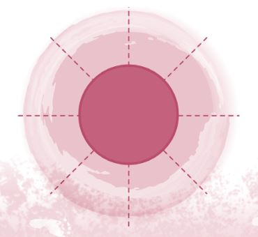
3. Hãy viết một khoản ký gửi bạn có thể gửi vào Tài khoản Mối quan hệ của bạn bè mình.
Bạn bè: _________________________________________
Khoản ký gửi: __________________________________
4. Hãy liệt kê ba việc bạn có thể thay đổi để bản thân trở thành một người bạn đáng yêu hơn.
_______________________________________________
_______________________________________________
_______________________________________________
5. Có người nào từng mong được gia nhập vào nhóm bạn của bạn không? Nếu có, hãy mở lòng và đón nhận họ nhé.
Người muốn được gia nhập:_______________________
Việc tôi có thể làm để mở rộng lòng mình: __________
_______________________________________________
6. Hãy ghi nhớ câu nói của George Eliot: “Chúng ta sống để làm gì nếu không phải để giúp cuộc sống của nhau bớt khó khăn hơn?”.
7. Hãy nhớ đến một người bạn vừa xúc phạm bạn gần đây. Trong tuần này, hãy khiến người đó bất ngờ bằng cách lấy ân báo oán nhé.
8. Nếu bạn liên tục ganh đua hoặc so sánh bản thân mình với một người nào đó, hãy gõ gót giày vào nhau ba lần và nói thật to: “Mình sẽ thôi ganh đua và so sánh bản thân với _________________________”.
9. Bạn có một người bạn hay một nhóm bạn khiến bạn sa ngã không? Nếu có, hãy tìm cách thoát khỏi mối quan hệ hoặc nhóm bạn đó ngay.
10. Hãy liệt kê năm việc có liên quan đến áp lực bạn bè mà bạn sẵn lòng đấu tranh chống lại.
_______________________________________________
_______________________________________________
_______________________________________________
_______________________________________________
_______________________________________________